課前補充：Napkin AI，貼上文字秒變圖表
衛教單張、上課簡報、家屬說明都用得到。3 分半的教學，建議上課前先看、先註冊。
Napkin 是什麼
把一段文字貼進去，它會自動畫成流程圖、步驟圖、比較表、心智圖等視覺圖，可以換風格、改字、加圖示，再匯出成圖片放進單張或簡報。不用會設計、不用會畫圖。
免費版
- 每週 500 點數，一般衛教用途夠用
- 可匯出 PNG、PDF，或直接複製到剪貼簿
- 匯出的圖會有小小的 Napkin 浮水印
六步驟（跟著影片做）
- 註冊：用 Google 帳號登入 napkin.ai
- 貼上文字：新增文件，把衛教重點貼進去（有個案內容先過去識別化工作台）
- 產生圖：反白段落，按藍色閃電，挑一張喜歡的
- 換風格：點圖，右側直排工具列的調色盤換配色、其他按鈕換版型或字型
- 編輯：增減項目、改字、換圖示
- 匯出：PNG 放單張、PDF 列印、複製圖片貼到簡報，這三種免費，但圖上會有 Napkin 小標記。要能在 PowerPoint 裡改字的 PPT 檔、SVG 向量檔，或拿掉標記，需付費 Plus 方案（每月 9 美元）。匯出視窗裡也有 Google Slides，是否免費以畫面為準。
先用 AI 整理文字，再丟給 Napkin
Napkin 畫得好不好，取決於你貼的文字有沒有結構。先請 ChatGPT／Claude／Gemini 整理成條列，再貼過去。
適合畫成圖的衛教主題：低血糖 15-15 法則、胰島素注射步驟、足部檢查流程、回診前準備清單、飲食餐盤比例。
實際操作畫面（講師帳號，2026 年 11 月）
以「居家防跌四步驟」為例，點圖可放大。
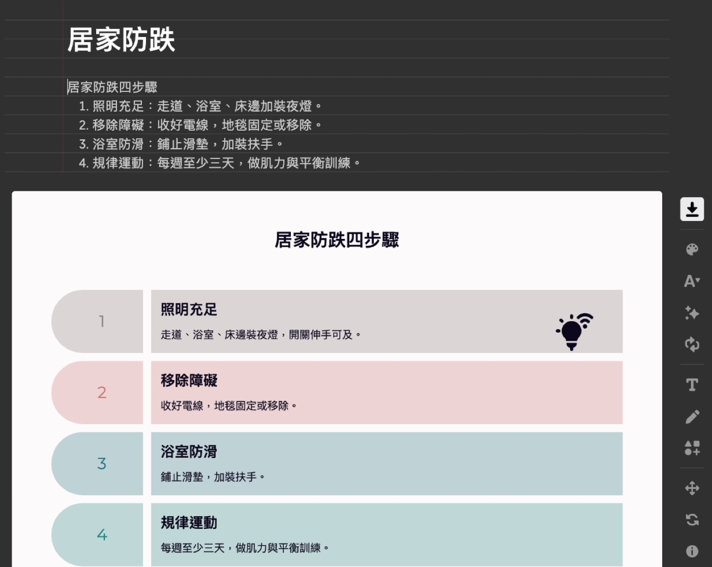
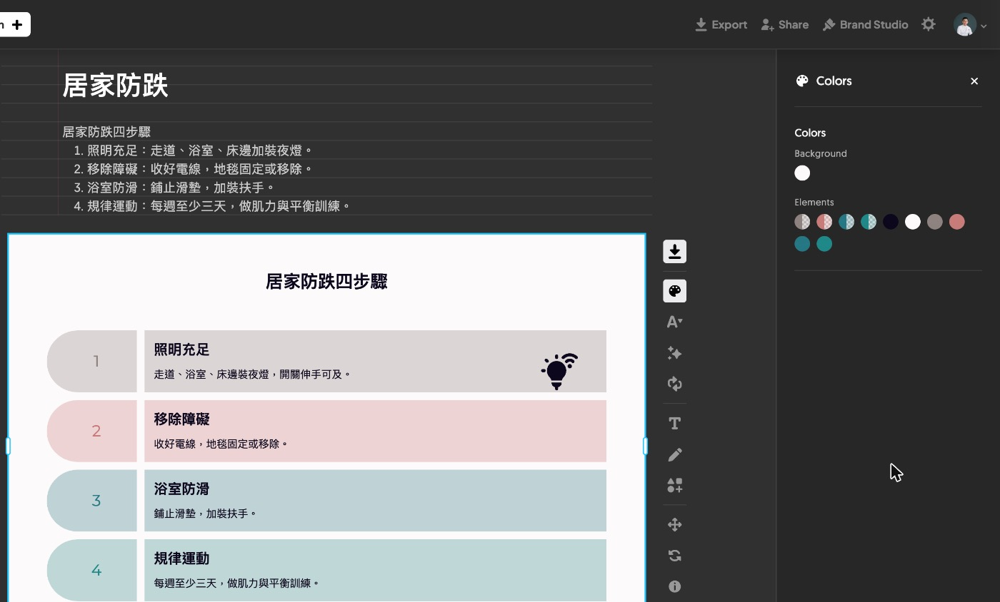
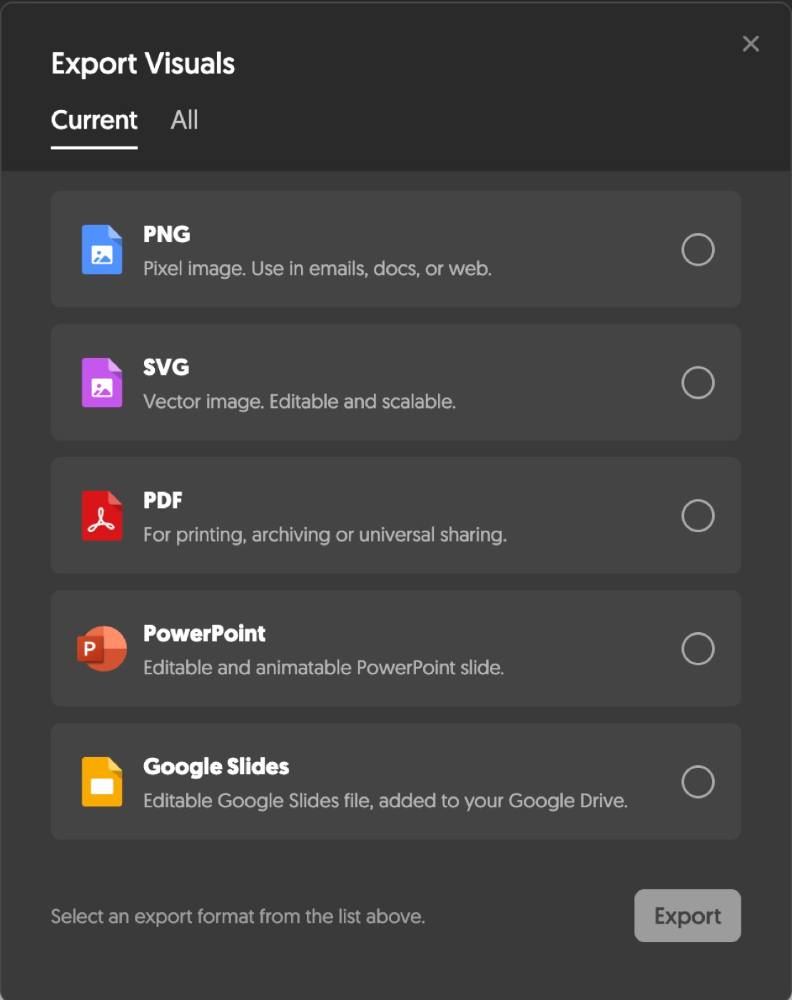
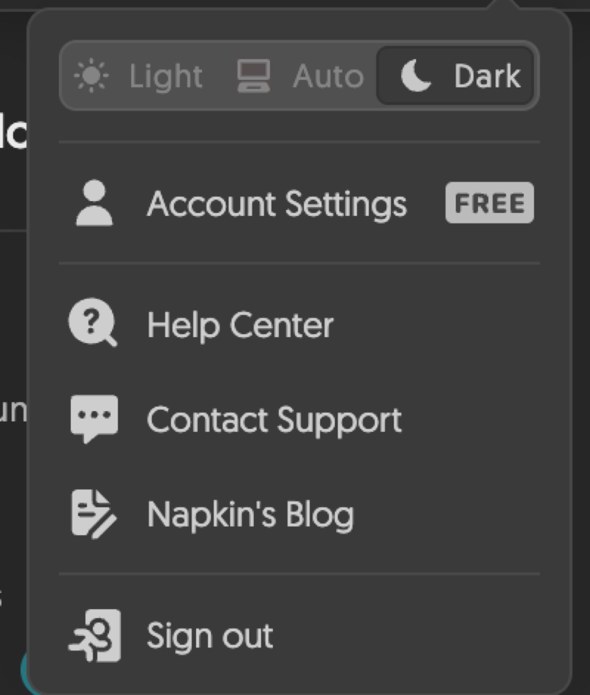
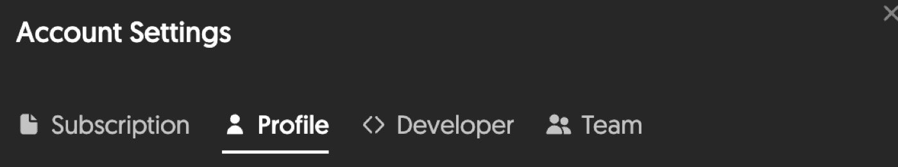
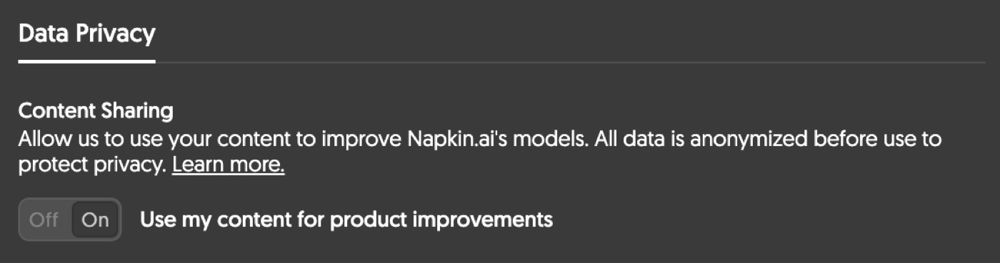
三個提醒
① 個資
貼進去的文字一樣會上雲端。
不能貼：
- 姓名、病歷號、身分證字號、健保卡號
- 生日、電話、地址、LINE ID
- 檢驗報告或病歷截圖（表頭常有個資）
- 病人或家屬照片
- 「年齡＋罕見狀況＋地點」這類一看就知道是誰的組合
- 院內未公開的數據、公文、同事評語
可以貼：已公開的衛教單張、自己寫的草稿、合成或已去識別化的資料。
② 隱私設定（註冊後先做）
- 右上角頭像 → Account Settings
- 切到 Profile 分頁，往下捲到 Data Privacy
- Use my content for product improvements（用我的內容改善產品）切到 Off
預設是開的，內容會匿名拿去改善 AI。關了只影響之後的內容；簡報版 Slides 也一起適用。團隊空間由管理員設定。
③ 核對
數據圖它也能畫，但數字、順序要自己對過原文，圖越漂亮越容易被相信。
今天的學習地圖
十一個步驟分成三段：先會問、再會用功能、最後讓 AI 自己動起來。
三段式升級路線
四個工具的顏色標記：ChatGPTClaudeGeminiOpenCode 前三個是「對話」工具，OpenCode 是第 1 堂請大家先安裝的「AI Agent（代理）」：不是一問一答，而是交辦一件事讓它自己做完。介面按鈕名稱以 2026 年 10 月為準，三家改版很快，找不到時直接在對話框說「我要用 ○○ 功能」通常也能叫出來。
四個工具：線上版、桌面版與差異
四個在台灣都能直接用，免費註冊即可。上課建議電腦開網頁版或桌面版，手機裝 App 練語音。
| 工具 | 線上版（台灣可用） | 桌面版下載 | 支援系統 | 登入帳號 | 強項 | 免費版要注意 |
|---|---|---|---|---|---|---|
| ChatGPT | chatgpt.com | 下載頁 | Windows、Mac | Google、Apple、Email | 中文語音對話最自然、生圖後局部修改、外掛最多 | 聽寫可能出簡體，要設定（見第 4 節） |
| Claude | claude.ai | 下載頁 | Windows、Mac | Google、Email | 長文寫作與改稿、Excel 分析、Artifacts 小工具；桌面版可開 Code 分頁 | 每 5 小時有用量上限，大檔先轉文字（見 B 節） |
| Gemini | gemini.google.com | 下載頁 | Windows 10 以上；Mac 需 Apple 晶片、macOS 15 以上 | Google 帳號 | 和 Gmail、雲端硬碟、NotebookLM 整合；快捷鍵叫出、看畫面回答 | 公司或學校 Google 帳號可能被管理員關閉，用個人帳號 |
| OpenCode | —（沒有網頁聊天版） | 下載頁（中文官網） | Windows、Mac、Linux | 不用帳號；選內建免費模型或接 AI 帳號 | AI Agent：在資料夾裡讀檔、改檔、一次處理很多檔案 | 只開放去識別化的練習資料夾 |
網頁版 vs. 桌面版差在哪？
功能和對話紀錄是同一套，同一個帳號會同步。桌面版多了快捷鍵叫出、拖曳檔案、看目前畫面，Claude 桌面版還能用 Code 分頁在電腦上裝工具（例如 B 節的 MarkItDown）。院內電腦不能安裝軟體時，用網頁版就好。
怎麼確認自己用的是正版？
只從上表連結或官方 App Store／Google Play 下載。搜尋時常見「ChatGPT 中文版」「免登入 GPT」等仿冒網站，會收集你輸入的內容，不要用。
暖身：輸入框打「/」會發生什麼事？
裝好三個工具後的第一個體驗。先弄清楚「官方的 /」和「民間的 /」是兩回事，再用八個速記玩一輪。
官方的「/」：每家不一樣，而且都不是提示詞
| 工具 | 打「/」跳出什麼 | 性質 |
|---|---|---|
| ChatGPT | 工具選單：回饋、在專案中工作、學習、新增自訂 GPT、模型、語音輸入 | 功能捷徑，等於點按鈕 |
| Claude | 「新增檔案」＋你裝的技能清單（第 14 節） | 叫出技能 |
| Gemini | 提示「/ 已改為 @」：打 @ 才會列出應用程式與技能 | 叫出應用程式與技能 |
| OpenCode | 真正的指令：/connect 連供應商、/models 換模型、/init 寫 AGENTS.md、/undo 復原、/new 新對話、/help | 程式指令，打錯無效 |
實際畫面：三家打「/」
講師帳號實測（2026 年 11 月）。
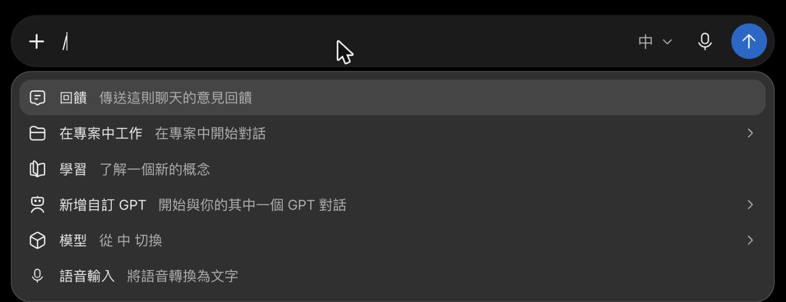
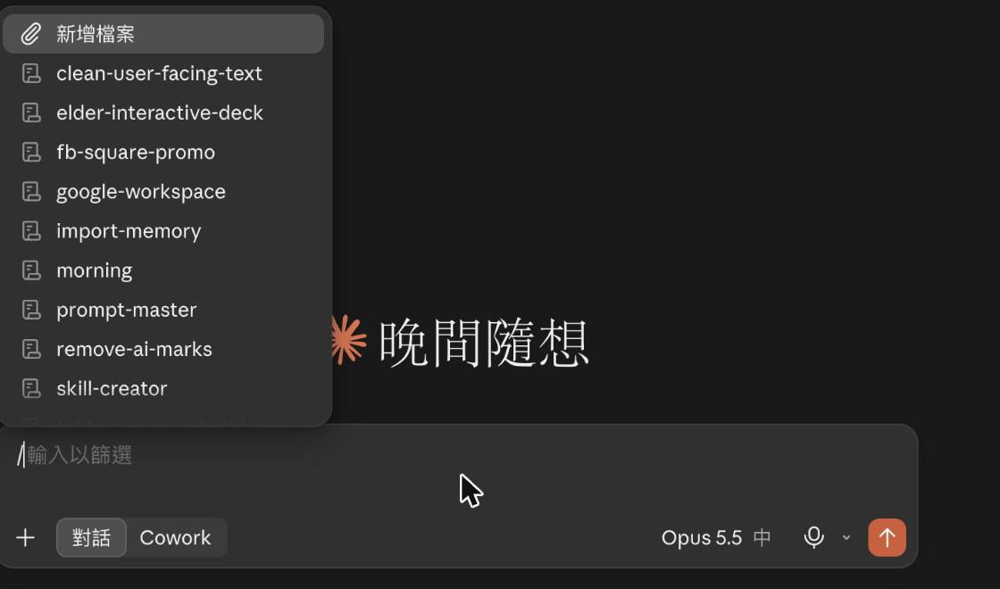
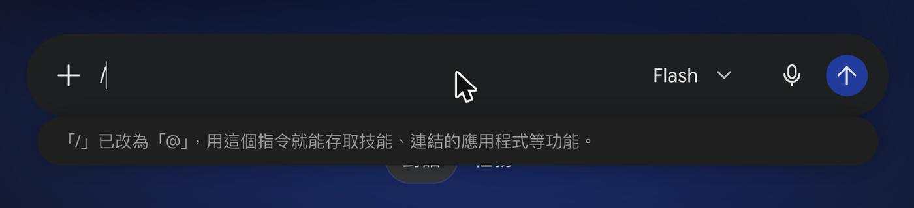
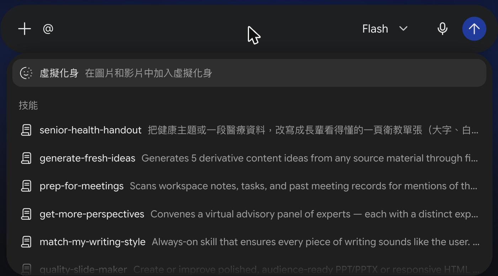
速記實測：/eli5 糖化血色素
ChatGPT 看到「eli5」就自動用「小學生也懂的方式」解釋，還配了圖；這就是「英文字當提示詞」。
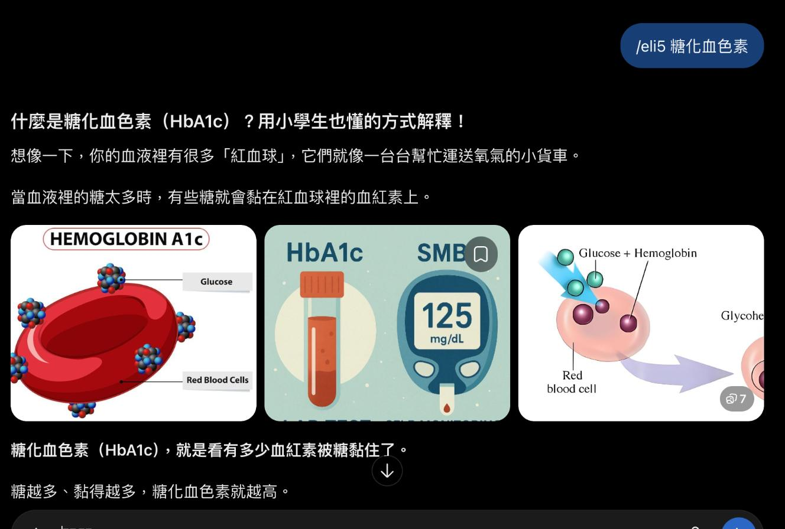
八個速記，帶學員玩一輪（每個 1 分鐘）
規則：先猜它會做什麼，再送出，三家各試一次，比較差異。斜線後面的英文就是提示詞本身，所以英文字要選最沒有歧義的那個。
| 速記 | 怎麼打 | 它多半會做 | 工作上什麼時候用 |
|---|---|---|---|
/tldr | /tldr ＋貼一段公文或公告 | 三到五句摘要 | 每天看公文、群組長訊息 |
/eli5 | /eli5 糖化血色素 | 用五歲聽得懂的話解釋 | 準備對長者的說法 |
/table | /table 比較三類口服降血糖藥的常見副作用 | 直接給表格 | 要貼進簡報的對照表 |
/fix | /fix ＋貼一段有錯字的衛教文 | 只改錯字與標點，不改意思 | 送審前最後一關 |
/checklist | /checklist 第 2 型糖尿病出院衛教 | 可勾選的清單 | 交班、教案、評鑑準備 |
/quiz | /quiz 5 題 低血糖處理 | 出題＋附答案 | 團體衛教的互動、新人訓練 |
/translate | /translate en→zh ＋貼一段指引 | 翻譯並保留專有名詞 | 讀英文指引、回外籍病人訊息 |
/roleplay | /roleplay 你是 70 歲剛確診、不想打針的病人 | 進入角色跟你對話 | 練習衛教對話、新人演練 |
帶領順序
- 先打官方的：ChatGPT「/」選「學習」、Claude「/」看技能、Gemini「@」看應用程式。讓大家看到三家不一樣。
- 再玩民間的八個速記，三家並排。
- 最後同一件事用完整句子再做一次：「請把下面公告摘要成三句，給護理同仁看」。比較哪個穩。
要講的結論
- 速記省打字，但模型在猜；猜錯就重來，成本很低。
- 要求固定、每週都用的事，不要靠速記，做成技能（第 14 節）或放進專案。
- OpenCode 的「/」是真的指令，打錯沒反應，不是它壞掉。
- 練習只貼公開的公告與衛教文，不要貼含病人資料的內容。
AI 底層邏輯：它不是 Google，是「接下一句」的高手
懂原理，才知道為什麼會有 AI 味、為什麼會一本正經地講錯。
搜尋引擎Google
拿你的問題去網路上找現成的網頁，給你連結，你自己判斷。
生成式 AIChatGPT／Claude／Gemini
根據訓練時學到的大量文字，預測「最合理的下一個字」。你說「床前明月光」，它自然接「疑是地上霜」，就算你沒叫它接。
兩個直接後果
- AI 味：大家問一樣籠統的問題，它就給最安全、最平均的答案。問題不是 AI，是你給的資訊太少。
- 幻覺：它的目標是「說得通順」，不是「說得正確」。劑量、指引年份、給付規定這類數字，最容易被編得很像真的。
方案怎麼選：先免費，用到卡住再升級
大部分功能免費版就用得到。本課程也以免費版能完成為原則。
| 層級 | ChatGPT | Claude | Gemini |
|---|---|---|---|
| 免費 | 免費版：對話、生圖、語音、有限的深度研究；可能出現廣告 | Free：對話、專案、Artifacts、部分連接器；每日額度較少 | 免費版：快速模型、生圖、Canvas、引導式學習、Gems |
| 入門付費 | Go：功能同免費，額度約多 10 倍，仍可能有廣告 | — | Google AI Plus：較高額度＋雲端空間，可家庭共享 |
| 主力付費 | Plus：頂級模型、完整 Work、無廣告 | Pro（約 US$20／月）：更高額度、研究、桌面版 Cowork 與排程 | Google AI Pro：Pro 模型、深入研究、排定動作、較高額度 |
| 重度使用 | Pro：最強模型與最深思考，額度一般人用不完 | Max（US$100／200 月）：Pro 的 5～20 倍額度 | Google AI Ultra：最高額度與實驗功能 |
介面導覽：同樣的五個按鈕，三家都有
網頁版、桌面版、手機 App 都能用免費帳號；手機 App 一定要裝，走路就能用說的。
| 你要做的事 | ChatGPT | Claude | Gemini |
|---|---|---|---|
| 上傳檔案、圖片 | 對話框「＋」 | 對話框「＋」或直接拖進來 | 對話框「＋」，可直接選雲端硬碟 |
| 讓它想久一點 | 輸入框右側「推理強度」，平常用 Medium 或更高即可 | 模型選單 →「投入程度」調高（舊稱延伸思考） | 模型選單選 Pro，或調「思考程度」 |
| 用說的 | 麥克風聽寫；右側按鈕開語音對話 | 麥克風聽寫；語音模式 | 麥克風聽寫；Gemini Live 即時對話 |
| 不留記錄、不受記憶影響 | 右上「暫時對話」 | 右上「無痕」聊天 | 左側選單「發起新對話」旁的「臨時對話」圖示（手機先點左上角 ☰）；離開這個對話就消失，也不套用 Gem 和個人化 |
| 找以前的對話 | 左側歷史，可改名、刪除 | 左側「聊天」，可搜尋、加星號 | 左側對話清單，可釘選、改名 |
實際介面畫面（2026 年 11 月，網頁版）
講師帳號的真實畫面，點圖可放大。三家都是「輸入框左邊＋、右邊模型與麥克風」。
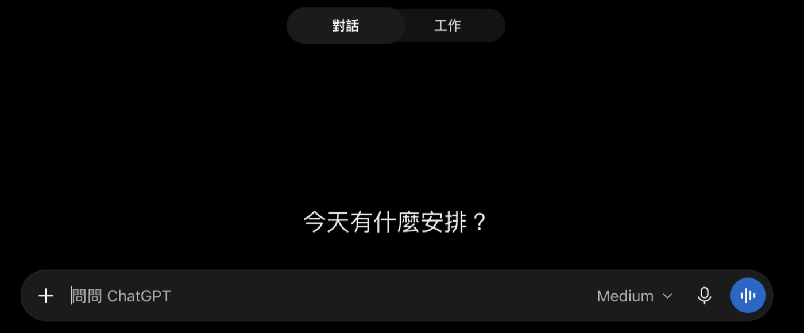
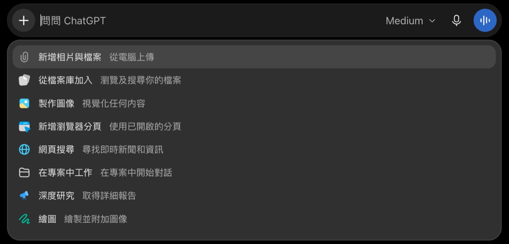
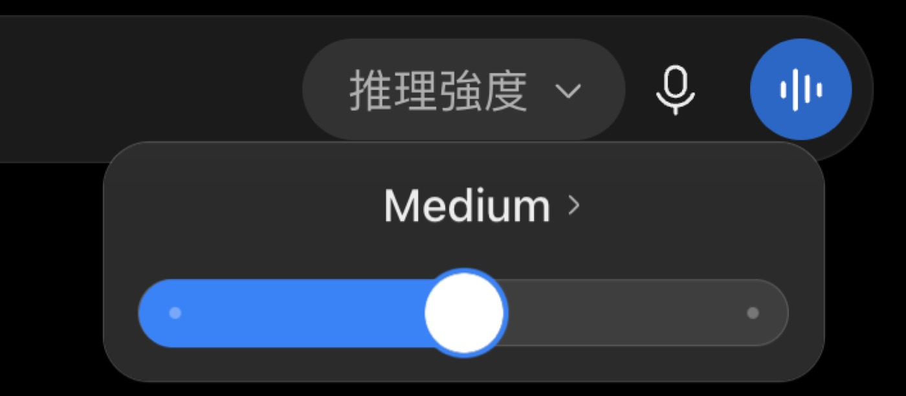
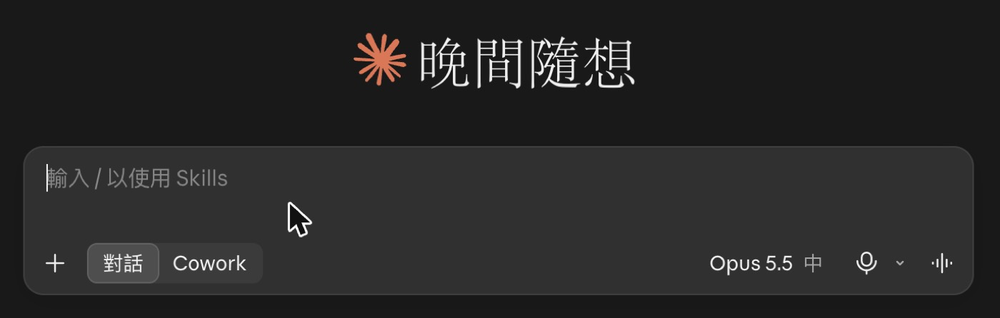
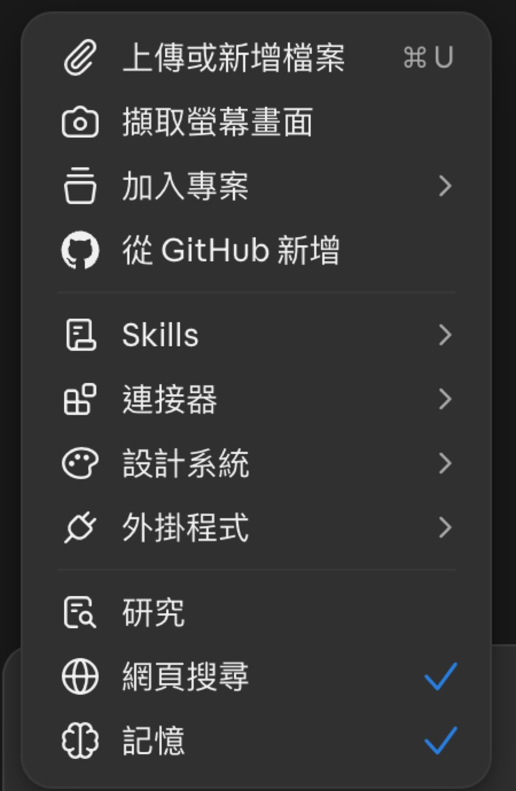
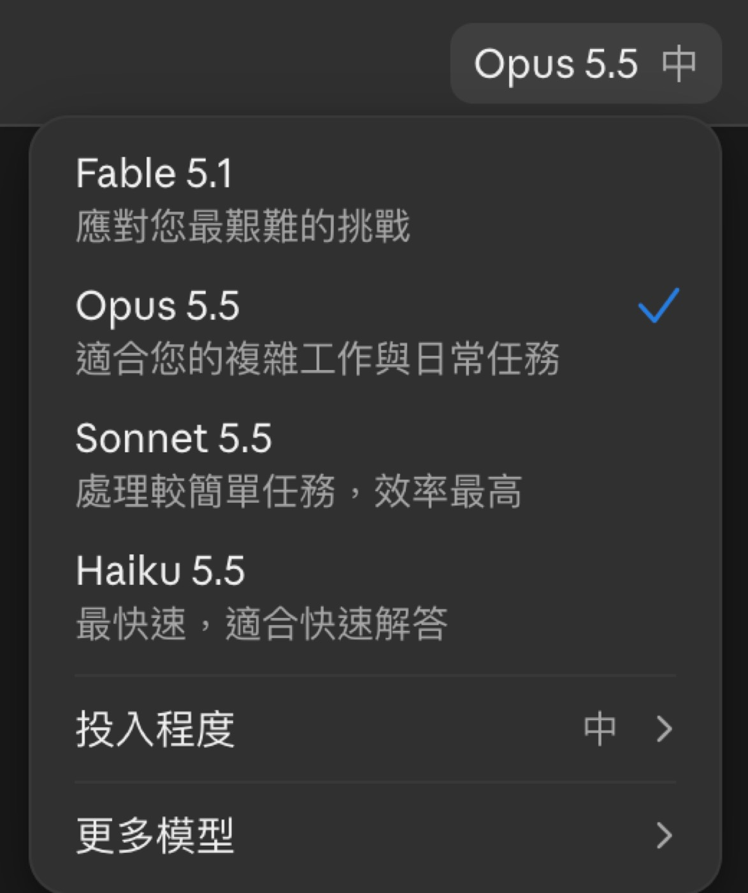
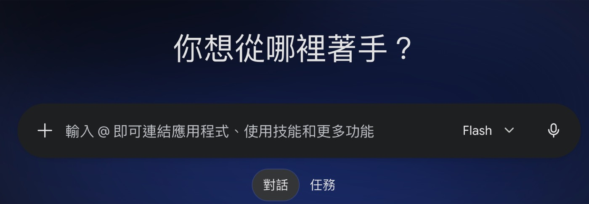
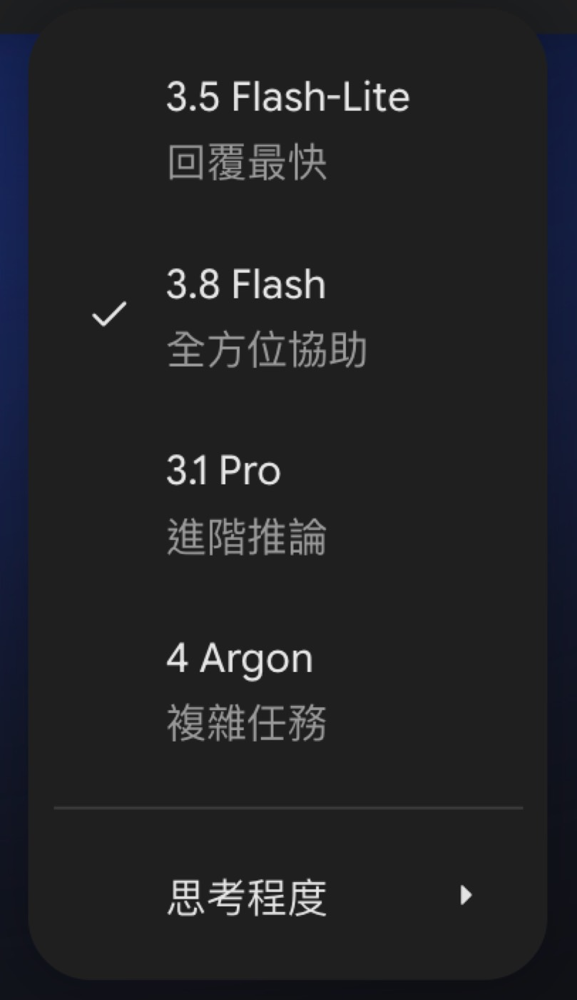
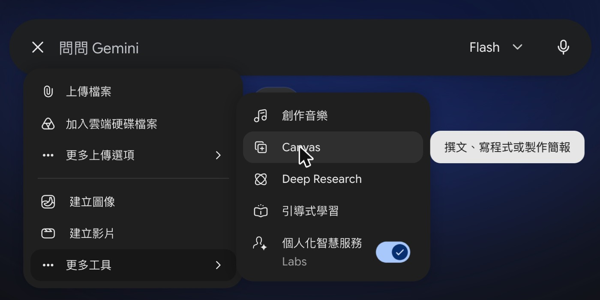
ChatGPT桌面版彩蛋：「Mini 與寵物」到底有什麼用？
一句話：它是一個浮在桌面上的 ChatGPT 快捷鍵。不用切回 ChatGPT 視窗，在 Word、病歷系統、PDF 前面按一下就能打字或用說的問，還能看長任務做到哪。寵物只是外觀，換哪一隻都不影響 AI 的能力。
① 隨叫隨問
Mac 按 ⌥ Option＋空白鍵、Windows 按 Windows＋Alt＋P，叫出浮動小工具。點鉛筆打字、點聲波圖示用說的。和第 1 堂 Gemini 桌面版的快捷鍵同一個概念。
② 看長任務進度
交辦 Work 或深入研究這類要跑 10 分鐘的工作後，可以去做別的事。寵物旁的泡泡會顯示：執行中、需要你回覆、已完成、卡住。鈴鐺圖示可看所有進度。
③ 選 Mini＝只要工具不要寵物
覺得卡通角色不夠專業，就選「無／Mini」，只留下鉛筆、聲波、下拉三個按鈕，一樣能隨叫隨問。
課堂試用：3 分鐘
- 更新 ChatGPT 桌面版到最新（下載頁見學習地圖的表格）
- 點左下頭像 →「寵物」，或「設定 → 寵物」，選一隻寵物或「Mini」
- 在對話框輸入
/pet，或按上面的快捷鍵，寵物出現在桌面角落 - 打開一份已公開的衛教單張 PDF，按快捷鍵 → 點聲波圖示，說：「幫我把這段改成長輩聽得懂的口語」並貼上文字
- 再交辦一件長任務，例如請 Work 整理「長者足部照護」資料，切去做別的事，看寵物的泡泡變化
- 不想要了：再輸入一次
/pet，或在寵物上按右鍵 →「隱藏」
免費？要付費嗎？
| 功能 | 狀況 |
|---|---|
| 內建寵物、Mini、快捷鍵叫出 | 免費可試官方沒有列為付費限定，更新桌面版即可；依帳號與工作區逐步開放 |
| 建立自訂寵物（例如做一隻醫院吉祥物） | 吃額度會開一個新對話跑生圖任務，免費版額度少可能做不完；做好的寵物只存在這台電腦 |
| 網頁版的寵物 | 看方案只出現在 Work 對話裡，沒有浮動小工具；Work 能用幾次依方案而定 |
| 泡泡顯示的長任務（Work、深入研究） | 看方案任務本身的次數依方案而定，寵物只是幫你看進度 |
手機 App 沒有這個功能。按鈕名稱依官方 2026 年說明，版本不同可能略有差異。
第四個工具 OpenCode：從「對話」到「代理」
第 1 堂請大家先裝好的那一個。今天先學會差別、設定好模型，後面每個功能都會回來用它。
對話工具 vs. AI Agent
| ChatGPT／Claude／Gemini | OpenCode | |
|---|---|---|
| 怎麼互動 | 你問一句，它答一句 | 你交辦一件事，它自己拆步驟、做完、回報 |
| 碰得到什麼 | 你貼上或上傳的內容 | 你指定的整個資料夾：讀檔、建檔、改檔、跑程式 |
| 適合 | 想、寫、改、問 | 重複性文書、一次處理很多檔案、要產出檔案的工作 |
| 用什麼腦 | 各家自己的模型 | 內建免費模型，或接上你的 Gemini／ChatGPT／Claude 帳號 |
上課一起做的設定（約 5 分鐘）
- 打開 OpenCode（還沒裝的請先到 opencode.ai）
- 選模型：先用內建免費模型（課堂用 Nemotron 3 Ultra Free，下方表格說明怎麼挑）就能跑；想用熟悉的模型，用「連接供應商」登入你的 Gemini 或 ChatGPT 帳號
- 建立一個練習資料夾，例如「桌面／AI練習」，把合成資料與已公開的衛教單張放進去
- 在 OpenCode 打開這個資料夾，以後所有交辦都只在這個資料夾裡進行
OpenCode 裡的模型怎麼選？免費／付費差在哪、要多少錢
OpenCode 本身免費，「腦」要另外選。選單裡混著免費試用、付費計次和多家公司的模型，名字看不出來源。下表整理 2026 年 11 月官方清單，中國公司的模型一律標紅，課堂不用；來源沒公開的「隱身模型」也不建議，不知道資料去了哪裡。
| 模型 | 誰做的 | 費用 | 優點 | 缺點 | 適合情境 |
|---|---|---|---|---|---|
| Nemotron 3 Ultra Free（另有 3.5 Lightning、3.5 Super VL） | NVIDIA（美國） | 免費限時 | 免費裡最大、最穩的非中國模型；開放權重 | 複雜交辦會漏步驟；限時免費，隨時可能收回 | 課堂免費首選：轉檔、整理資料夾、改單張 |
| Big Pickle、Beam、Flint 40B、Jev 1.13 | 隱身模型，來源未公開 | 免費限時 | 有時很強 | 不知道是哪家、資料怎麼用；可能隨時換掉底層模型 | 不建議。醫療場域不要用來路不明的腦 |
| GLM、DeepSeek、MiMo、Qwen、Kimi、MiniMax、Hy3 | 智譜、DeepSeek、小米、阿里、月之暗面、MiniMax、騰訊（皆中國） | 免費版與付費版都有 | 便宜、額度大 | 伺服器與資料政策受中國法規管轄 | 課堂一律不用，包含免費版 |
| Claude Sonnet 5.5 | Anthropic（美國） | 每百萬 token 輸入 US$2／輸出 US$10 | 照指令改檔最可靠，少擅自發揮；長任務不迷路 | 比小模型貴 10～20 倍 | 批次改文件、整批衛教單張重寫、做網頁 |
| Claude Opus 5.5 | Anthropic | US$4／US$20 | 最會規畫多步驟、最會抓細節 | 慢、貴 | 一次要處理整個資料夾的大工程 |
| GPT 6 Sol | OpenAI（美國） | US$2／US$10 | 數據分析、推理強；Excel 類任務穩 | 偶爾太囉嗦 | 品質指標、統計、要算數字的交辦 |
| Gemini 4 Argon | Google（美國） | US$2／US$10（11/30 前半價） | 吃得下很長的文件、看圖便宜 | 格式有時跑掉；中文偶有簡體 | 讀整本指引、含圖片的素材 |
| Claude Haiku 5.5、GPT 6 Luna、Gemini 3.5 Flash Lite | 同上三家 | 約 US$0.1～0.3／US$0.5～2.5 | 快、便宜，一次交辦不到一塊台幣 | 複雜任務會偷懶 | 轉檔、分類、改錯字、整理清單 |
| Grok 4.7、Mistral Large 4 | xAI（美國）、Mistral（法國） | US$2／US$6、US$0.68／US$2.09 | 非中國的平價選項 | 中文與醫療用語不如上面三家 | 備用 |
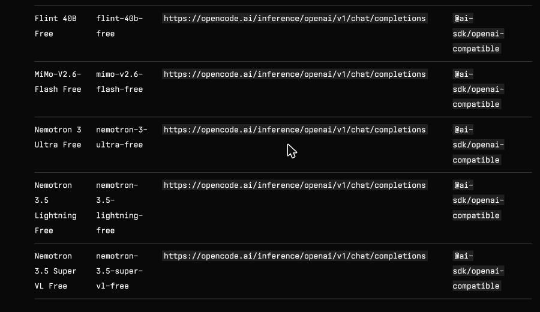
免費和付費差在哪
- 免費模型：限時、會輪替，量大時排隊；資料政策要看清楚，部分標「Contributor」的模型會拿你的內容去訓練。練習用合成資料沒問題，真實文件不要放。
- 付費計次（Zen）：先儲值，用多少扣多少，每次儲值另收 4.6%＋US$0.31 手續費。模型最齊，Claude、GPT、Gemini 都在同一個選單。
- 月費方案 OpenCode Go：US$10／月（Go Plus US$40），包 30 個模型的固定額度，每 5 小時最多用掉月額度的 20%。但清單以中國模型為主，非中國的只有 GPT 6 Luna、Claude Haiku 5.5、Gemini 4 Argon 這類，對我們不划算。
- 接自己的帳號：已付 Claude Pro 或 ChatGPT Plus 的人，在 OpenCode「連接供應商」登入即可，用的是訂閱額度，不另外付錢。Gemini 要到 Google AI Studio 申請金鑰，有免費額度。
付費大概要花多少
- 一次「三個版本衛教單張」交辦：約 2 萬 token 進、5 千出。Claude Sonnet 5.5 約 US$0.09（台幣 3 元）；Haiku 5.5 約 US$0.005。
- 整季 30 份單張重寫＋每週一次指標整理：Sonnet 5.5 大約 US$3～5／月。
- 最省：儲值 US$10 可以用一學期。比起再訂一個 US$20 月費，計次對偶爾用的人划算；每天都用再考慮登入自己的 Pro 帳號。
第一個交辦：把第 1 堂的作業一次做完
第 1 堂我們用六要素，一次改一份單張、一個版本。交給代理，一句話三個版本一起出，而且會存成檔案。
注意最後一句：第 7 節的 AMA 反問法，在代理上一樣有用，而且更重要，因為它接下來會真的動手。
先看懂三層：三家都是「對話 → 代理 → 資料夾代理」
ChatGPT、Claude、Gemini 現在的輸入框下方都有兩個切換，往下還各有一個會碰你電腦檔案的工具。名字都不一樣，其實是同一個階梯。
| 層 | ChatGPT | Claude | Gemini | 差在哪、什麼時候用 |
|---|---|---|---|---|
| ① 對話 | 對話 | 對話 | 對話 | 一問一答，你主導每一步。想、問、改一段文字都在這層。 |
| ② 代理 網頁版就有 | 工作（Work） 第 13 節 | Cowork 桌面版；網頁版用「研究」 | 任務 第 1 堂做簡報用的那個 | 交辦一整件事，它自己拆步驟、查資料、產出檔案（報告、簡報、試算表），做完回報。要等幾分鐘，額度吃得多，免費版次數少。 |
| ③ 資料夾代理 會讀寫你電腦的檔 | Codex 側欄或設定裡；另有 Codex 桌面程式；需 Plus | Claude Code 桌面版 Code 分頁；需 Pro | — （Gemini CLI 要打指令，課堂不教） | 進到你指定的資料夾批次處理、裝工具、跑程式。OpenCode 是這一層的免費通用版，三家模型都能接。 |
三層各自長什麼樣
同一個輸入框下方的切換，三家名字不同。
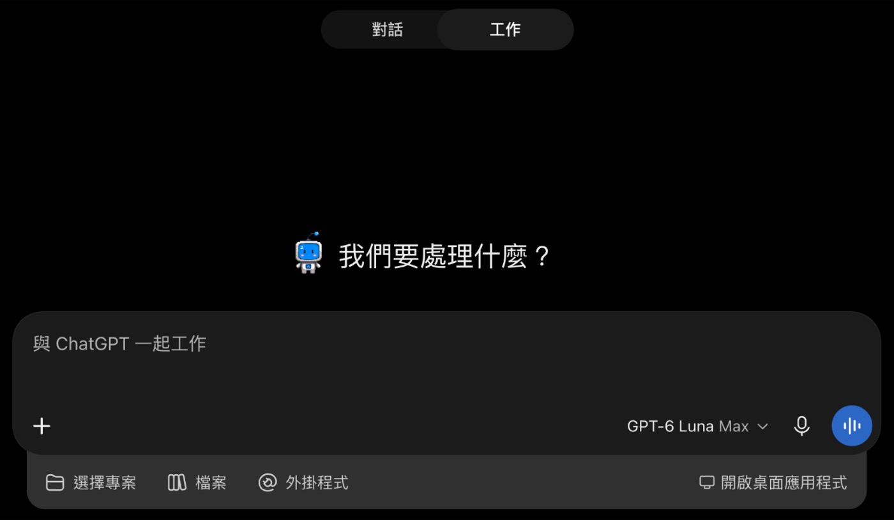
Agent 不只 OpenCode：三個工具裡的代理功能，以及之後怎麼用
| 工具 | 代理功能在哪 | 適合衛教師的用法 | 哪一堂 |
|---|---|---|---|
| OpenCode | 開啟資料夾就是 | 批次處理檔案、每季重跑指標、把文書流程寫成一次交辦 | 今天、第 5 堂 |
| ChatGPT | Work（工作）；Codex（資料夾代理，側欄／設定 → 應用程式）、雲端瀏覽器 | Work 做完整報告；雲端瀏覽器可代你操作網頁（例：到學會網站查學分），開啟前先看第 12 節的權限設定 | 今天第 13 節、第 5 堂 |
| Claude | 桌面版 Cowork；連接器 | 交辦「整理這個資料夾的衛教素材並做成簡報」；排程每週文獻快報 | 今天第 11、13 節 |
| Claude Code | 桌面版左上切到 Code 分頁 → 選一個電腦資料夾（需付費方案）；網頁版 Code 在雲端，碰不到你的電腦 | 和 OpenCode 同一類：在資料夾裡讀檔、改檔、裝工具、批次處理。例：裝 MarkItDown 把整批指引 PDF 轉文字（B 節）、把衛教內容做成互動網頁並發布 | 今天 B 節、第 5 堂 |
| Gemini | 排定動作；Agent 模式（陸續開放） | 每週自動整理公告；Google 全家桶內的跨 App 任務 | 今天第 11 節 |
第一招：讓 AI 成為「懂你的人」
最聰明的人不如最懂你的人。兩個設定：記憶＝你是誰；自訂指示＝你要它變成誰。
先解決上週的問題：麥克風講中文，ChatGPT 跑出簡體字
上週測試：Gemini 轉出來的文字正常，ChatGPT 會出現簡體字。要徹底解決，先弄清楚三個設定各管什麼，因為「記憶」和「自訂指示」只管 ChatGPT 的回覆，管不到麥克風聽寫出來的字。
| 設定 | 管什麼 | 位置（ChatGPT） |
|---|---|---|
| 語音 → 語言 | 麥克風聽寫出來的文字用什麼語言 | 設定 → 聲音（手機 App 叫「語音」）→ 語言：選「國語」或「中文」（不要留自動偵測） |
| 自訂指示 | ChatGPT 每一次回覆都遵守的規則 | 設定 → 個人化 → 自訂指示（一個文字框，直接打字） |
| 記憶 | 它對你的了解，覺得相關時才參考，不是每次 | 設定 → 個人化 → 記憶：啟用記憶、填暱稱、職業、關於你的更多資訊；或在對話裡說「請記住…」 |
| 快速回答（手機叫「簡要回答」） | 開著時，快速回答不會套用個人化與記憶，繁體規則也會被跳過 | 設定 → 個人化 → 其他 ChatGPT 設定 → 快速回答：關掉 |
為什麼上週改了記憶會「覺得有改善」？因為回覆變繁體了，畫面看起來正常很多；但自己講的話被轉出來的那段，很可能還是簡體。聽寫、回覆兩邊都要設。
ChatGPT三步都做
- 聽寫變繁體：左下頭像 →「設定」→「聲音」（手機叫「語音」）→「語言」→ 選「國語」或「中文」
- 回覆變繁體：「設定」→「個人化」→「自訂指示」→「ChatGPT」，文字框貼上下面那句
- 關掉漏洞：同一頁往下「快速回答」（手機叫「簡要回答」）關閉，開著時會跳過自訂指示與記憶
- 記憶補齊：「個人化」→「記憶」→ 啟用、填暱稱、職業（例：糖尿病衛教師）、關於你的更多資訊
- 測一次：開新對話按麥克風講一段話，看「轉出的字」和「回覆」是不是都繁體
Gemini上週為什麼正常
Gemini 跟著 Google 帳號的語言走，台灣帳號預設就是繁體中文，所以聽寫和回覆都對。不是模型比較聰明，是設定剛好對。
- 確認帳號語言：myaccount.google.com →「個人資訊」→「語言」→ 中文（台灣）
- 回覆規則也貼一份：Gemini 左下 ⚙️ 設定 →「個人化智慧服務」→「給 Gemini 的指令」→ 貼上同一句
- 同事如果用的是中國大陸或英文介面的帳號，第 1 步改過來就好
Claude一個欄位搞定回覆
- 左下名稱 →「設定」→「帳戶」
- 「給 Claude 的指示」欄位貼上同一句，之後每個對話都套用（舊名「個人偏好設定」）
- Claude 的麥克風聽寫跟著手機或電腦的系統語言，系統是繁體中文就不會有問題
實際設定畫面（2026 年 11 月，網頁版）
以下是講師帳號的真實畫面，點圖可放大。手機 App 的名稱略有不同，已在上面步驟註明。
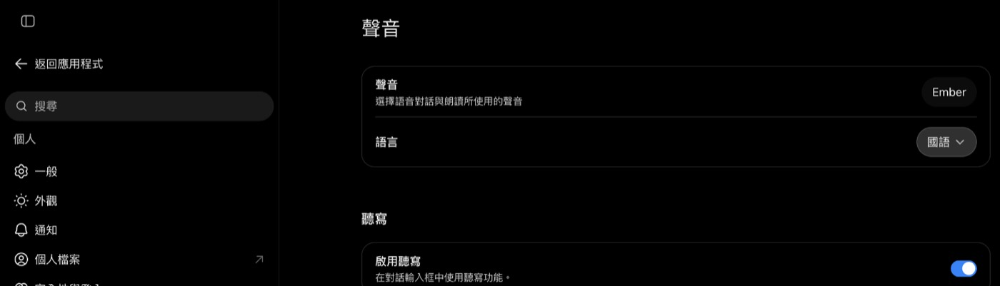
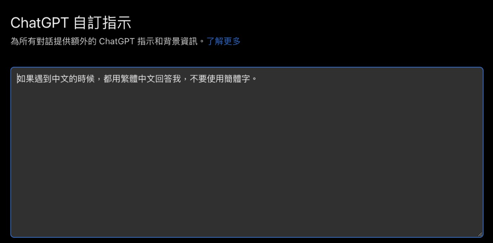
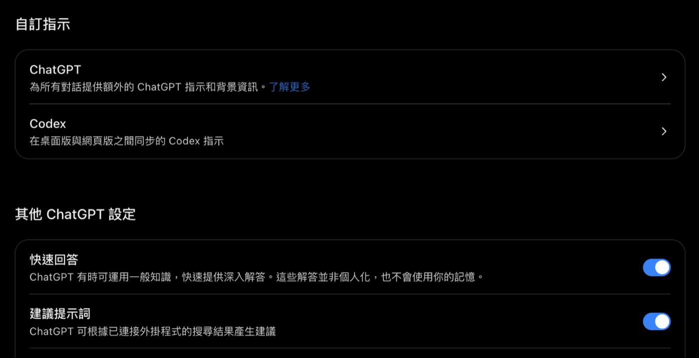
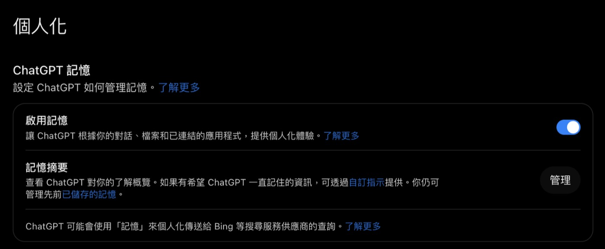
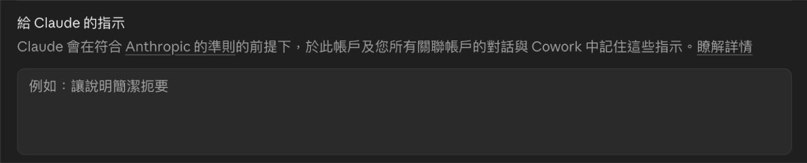
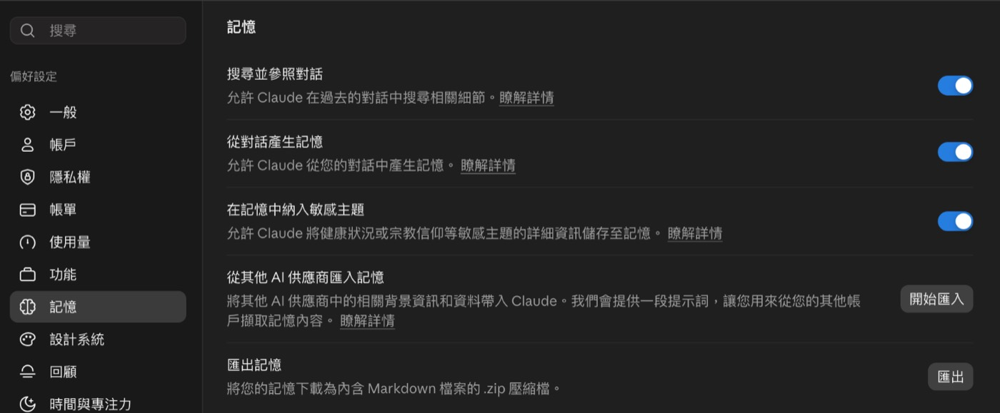
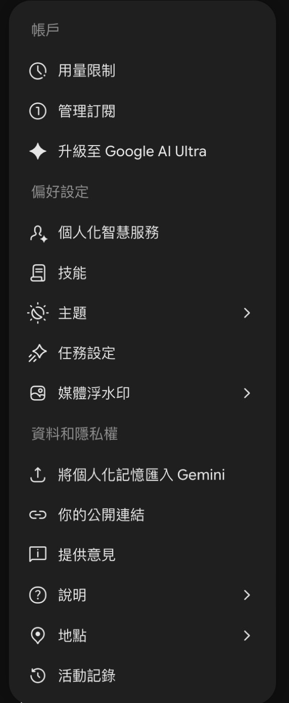
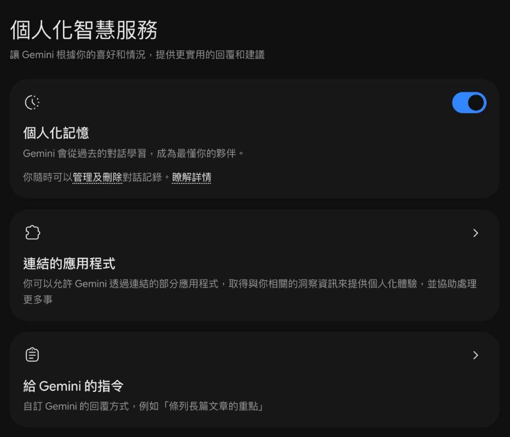
ChatGPT做法
- 左下頭像 →「設定」→「個人化」
- 「ChatGPT 記憶」：啟用記憶，按「管理」可查看、刪除
- 「自訂指示」→「ChatGPT」：每次回答都會遵守
Claude對應做法
- 左下名稱 →「設定」→「帳戶」
- 「給 Claude 的指示」欄位：貼上自訂指示（每個對話都套用）
- 「設定」→「記憶」：開啟「從對話產生記憶」，讓它記得過去對話
Gemini對應做法
- 左下 ⚙️ 設定 →「個人化智慧服務」
- 「給 Gemini 的指令」：逐條新增（舊名「個人背景資訊」）
- 同頁「個人化記憶」：開啟後會從過去對話學習
OpenCode對應做法
- 在練習資料夾開 OpenCode，請它建立 AGENTS.md（做法見下方）
- 把下方「自訂指示」整段放進去存檔
- 之後在這個資料夾開 OpenCode，每次交辦它都會先讀這份規則
OpenCodeAGENTS.md 是什麼？怎麼做？
先搞懂名字
- .md 是 Markdown 的副檔名，本質就是純文字檔，和 .txt 一樣能用記事本打開。用 # 當標題、- 當條列，人和 AI 都好讀。
- 檔名要一字不差：
AGENTS.md，AGENTS 大寫、有 S、副檔名 .md。OpenCode 只會自動讀這個名字，取成 agent.md、規則.md 都不會生效。 - 位置：放在練習資料夾的最上層。它管這個資料夾和裡面所有子資料夾。
- 已經有 CLAUDE.md？資料夾裡沒有 AGENTS.md 時，OpenCode 會改讀 CLAUDE.md，所以 Claude Code 和 OpenCode 可以共用同一份規則。
做法一：叫 OpenCode 幫你建（推薦）
- 在練習資料夾開 OpenCode
- 複製下方「自訂指示」，貼上這句再送出：
也可以在 OpenCode 輸入 /init，它會掃描資料夾自動產生一份 AGENTS.md，再請它把你的自訂指示加進去。
做法二：自己用記事本建（Windows／Mac）
Windows
- 檔案總管上方「檢視」→「顯示」→ 勾選副檔名（不勾會變成 AGENTS.md.txt）
- 在練習資料夾空白處按右鍵 →「新增」→「文字文件」
- 整個檔名改成
AGENTS.md，跳出「變更副檔名」警告選「是」 - 右鍵 →「開啟檔案」→ 記事本，貼上規則 → 存檔
Mac
- 打開「文字編輯」→ 選單「格式」→「製作純文字」（⇧⌘T）
- 貼上規則
- ⌘S 存檔，檔名打
AGENTS.md，位置選練習資料夾 - 若跳出「使用 .md 或 .txt？」選 使用 .md
步驟一：用語音做 3 分鐘自我介紹，請 AI 整理成記憶
開新對話、打開語音，照下面的問題講出來；整理好的文字再貼到上面的記憶／偏好欄位。
ChatGPT 設定清單：必要 vs. 建議（手機 App 版，左下頭像 → 設定）
| 位置 | 設定 | 建議 | 為什麼 |
|---|---|---|---|
| 必要語音 | 語言 | 中文 | 聽寫不再出簡體字 |
| 必要個人化 | 自訂指示 | 貼上本節的六條自訂指示 | 每次回覆都遵守：繁體、不確定就說、分開事實與推測、附來源、看到個資先提醒 |
| 必要個人化 | 快速回答（手機：簡要回答） | 關閉 | 開著時快速回答不套用自訂指示與記憶 |
| 必要個人化 → 記憶 | 啟用記憶、暱稱、職業、更多資訊 | 開啟；職業填「糖尿病衛教師」並寫服務對象 | 它才知道你是誰、對象是長者、要用衛教語言 |
| 必要資料控制 | 為所有人改善模型 | 關閉 | 醫療場域原則：對話不拿去訓練；即使只有合成資料也養成習慣 |
| 必要安全性與登入 | 多重驗證（兩步驟） | 開啟 | 記憶、外掛、雲端硬碟都綁在這個帳號上 |
| 建議個人化 | 基本風格和語氣 | 專業或預設；表情符號「少」 | 衛教稿要乾淨，少一步刪表情 |
| 建議個人化 | 視覺化回覆 | 預設或多 | 它會更常主動用表格、圖表整理數據 |
| 建議個人化 → 進階 | 檔案庫搜尋 | 開啟 | 問問題時會自動翻你上傳過的檔案（已公開的衛教單張、指標定義） |
| 建議語音 | 模型 Live／進階；背景對話 | Live；背景對話關 | Live 反應快；背景對話開著會在你切換 App 時繼續聽 |
| 建議語音 | 聽寫記錄 | 偶爾進去看 | 可以回頭確認聽寫有沒有把專有名詞打錯 |
| 不用動一般、通知、家長控制、信任聯絡人、寵物、參考相片 | 與工作無關；寵物與參考相片是趣味功能，院內示範時建議關掉 | ||
外掛程式、Codex、雲端瀏覽器三項在第 12、13 節和 OpenCode 那一節分別說明。
步驟二：貼上自訂指示（衛教師版）
前五條是通用的「防幻覺」設定，第六條是醫療場域加的。第二、三條是擋幻覺的關鍵：直接說「不要有幻覺」沒有用，要告訴它不確定時該怎麼做。
第二招：人事時地物＋Why
小學就學過的檢查清單。問題裡塞滿這幾項，AI 就不會在你不需要的地方用力。
例：糖尿病中心主任
例：品質指標季報
例：2026 Q3 對比 Q2
例：本院門診共照個案
例：8 頁簡報＋一頁摘要
例：決定明年衛教人力配置
一句話版得到「看起來有模有樣」
結果：一份很平均、哪裡都適用、主任看了不知道要幹嘛的報告。
補齊版得到「主任真正要的」
人事時地物＋Why 組合器
填完按「組合」，複製到任何一個 AI 都能用。和第 1 堂的「提示語六要素」是同一件事的兩種記法，挑你記得住的那一個。
第三招：碎念法
懶得整理問題？開語音碎碎念 3 分鐘，把想到的全丟給它。對人很失禮，對 AI 反而資訊最完整。
怎麼開始
- ChatGPT手機 App 按麥克風，或開語音對話
- Claude手機或桌面版按麥克風聽寫
- Gemini按麥克風；或用 Gemini Live 邊走邊講
- 電腦上：用第 1 堂的 Typeless 快捷鍵，講完自動變文字
最後補一句「請先整理我的狀況，再給建議」，讓它先確認理解對不對。
衛教師碎念示範（已去識別化）
AI 會把「怕低血糖自行減量」這種你順口帶過、其實很關鍵的線索抓出來。
第四招：AMA 反問法（最省力、最耐用）
任何問題最後加一句魔法句，讓 AI 負責想它需要哪些資訊，你只要回答就好。
它問太多？
回「你建議就好」，它會自己幫你做合理的預設。
某題不重要？
直接說「這題你決定」，只回答你在意的。
用說的回答
開語音一題一題講，比打字快很多。
實際操作畫面
講師帳號實際送出上面的衛教範例（2026 年 11 月），點圖可放大。
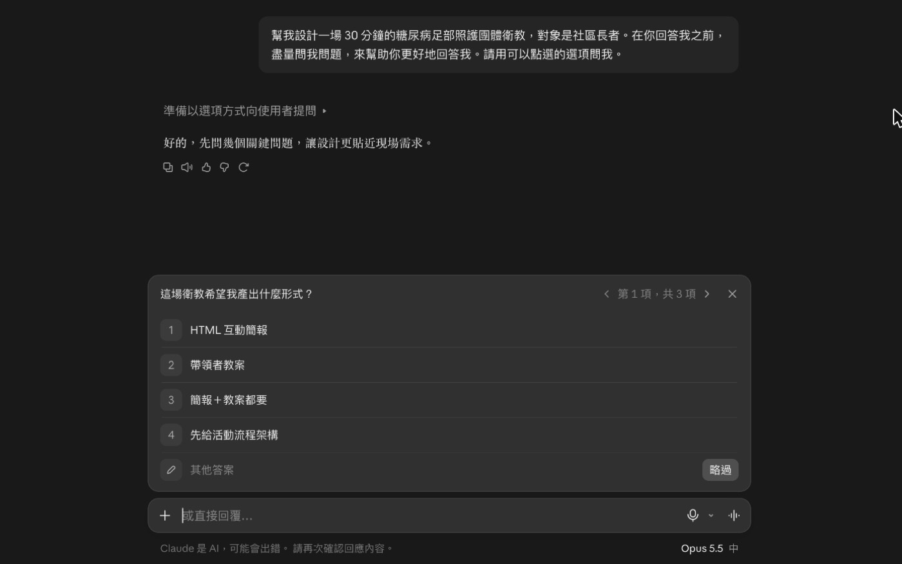
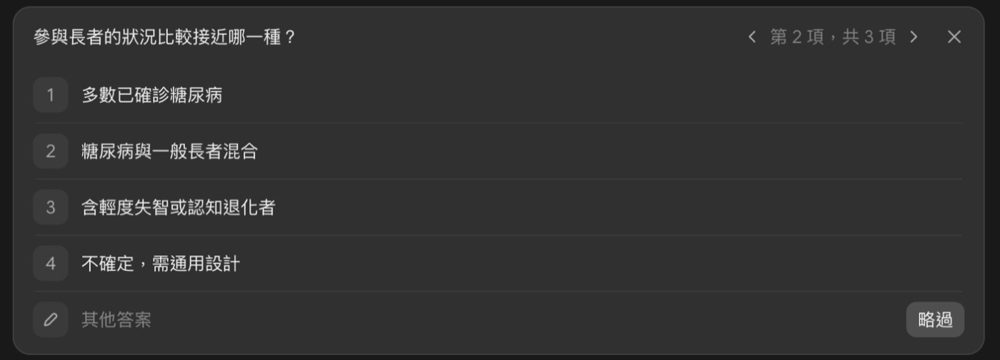
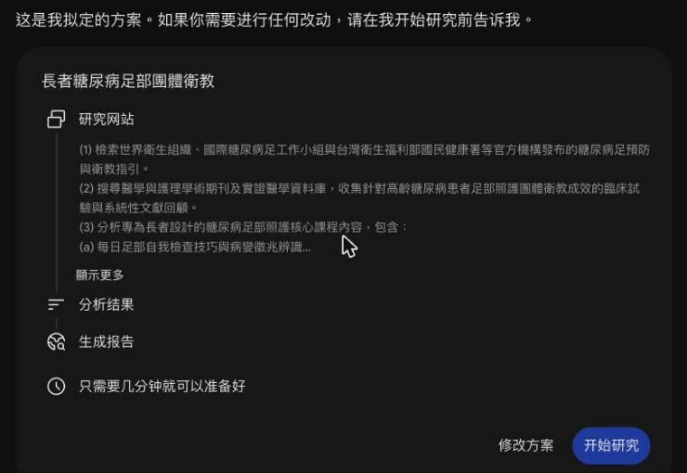
製圖：先生成，再「局部修改」
現在厲害的不是會畫，而是畫完能指定位置小修，不會整張毀掉重來。
ChatGPT做法
- 對話框「＋」→「製作圖像」，或第一句說「請直接生成一張圖片」
- 點圖片打開編輯器，下方工具列有「標註、留言、移除背景、擦除、調整大小」；用「留言」點在要改的位置打字
- 可上傳參考圖，要求「用這個設計感」
Gemini強項，免費就能用
- 對話框「＋」→「建立圖像」（Nano Banana 模型），下方可選「顯示比例」與「格式」
- 圖片生成後直接講「只把標題底色改深綠，其他不要動」；點圖片也能用「素描、文字」直接在圖上標記
- 中文字與資訊圖卡排版表現好，適合衛教圖卡初稿
Claude不生照片，改做「圖表型」圖卡
- Claude 沒有內建照片式生圖
- 請它「做成一張可下載的資訊圖卡（HTML／SVG）」，用 Artifacts 產生，文字百分之百正確、可再改
- 連接 Canva 後，可請它直接在 Canva 建立設計
- 看得懂參考圖：可請它拆解風格、寫好生圖提示詞，再貼到 Gemini 用 Nano Banana 生成
實際操作畫面：同一張「低血糖 15-15 法則」圖卡
講師帳號用上面的衛教圖卡提示詞實際生成，再做一次局部修改（2026 年 11 月）。點圖可放大。
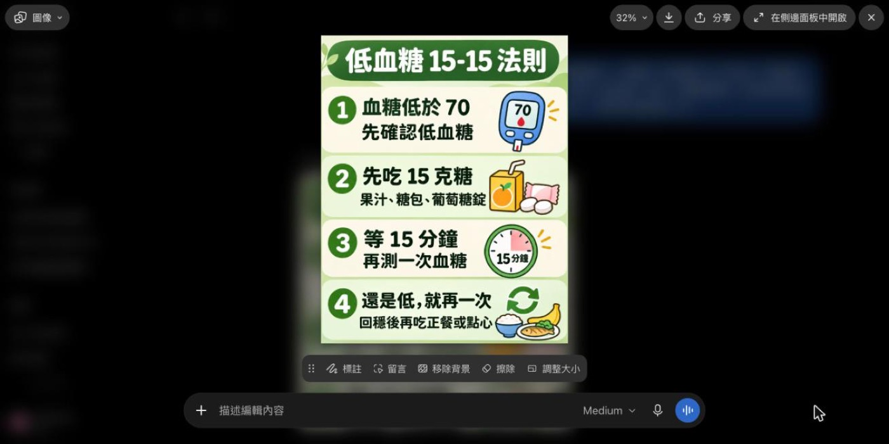
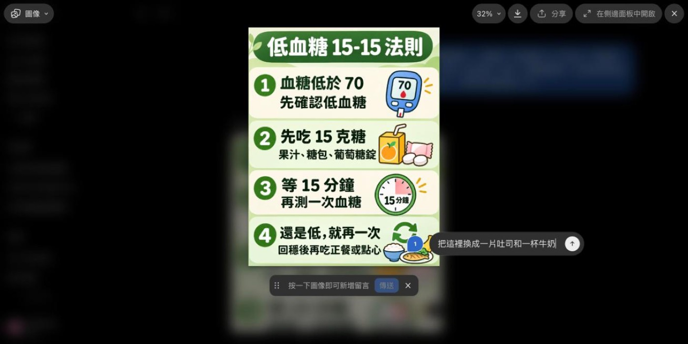
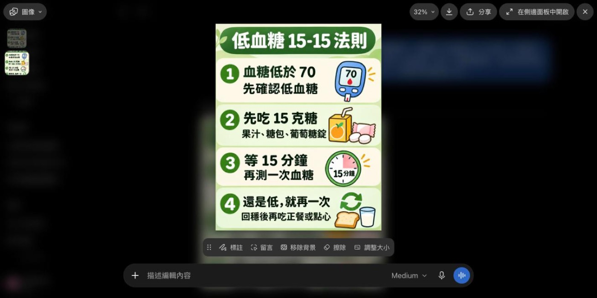
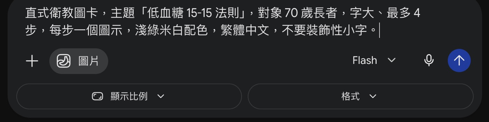
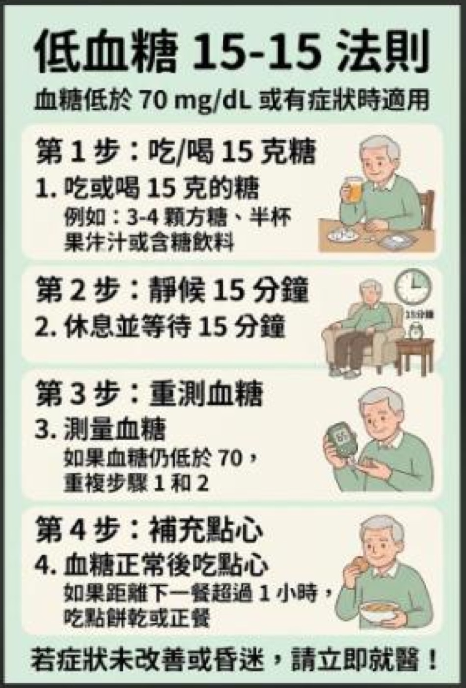
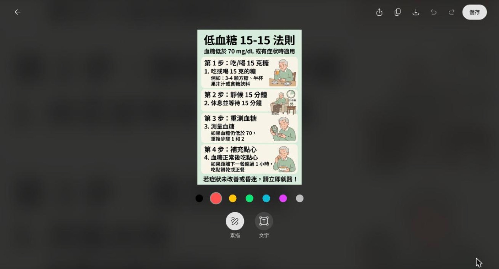
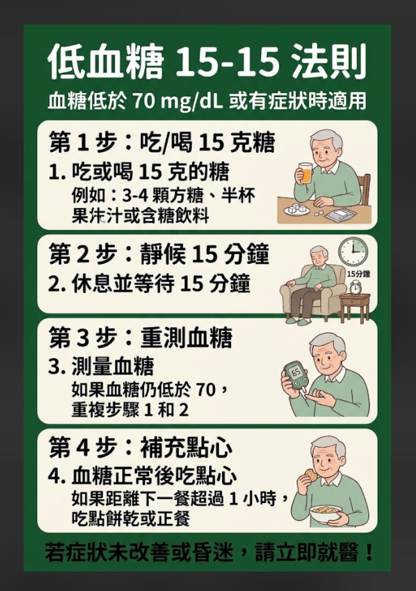
去掉 AI 味的三個技巧
- 一次只改一處：先出初稿，再「圈哪裡、改哪裡」，比一開始寫一長串限制有效。
- 指定色系與參考：給院內 CI 色碼或過去自己做的單張當風格參考；經驗上「要求用大自然的顏色」會比純黑黃金屬風自然。
- 刪掉莫名其妙的小字：AI 很愛在角落塞看不懂的小字，這是 AI 味最大的來源，衛教圖卡尤其不能有錯字。
承接第 1 堂：簡報後製的兩條捷徑（Canva 多頁模板、DeckEdit 文字辨識）
第 1 堂做簡報的流程是「Gemini Notebook／任務產出 → 匯出 PDF → Canva 魔法圖層一張一張改」。魔法圖層一次只收一張圖，十頁簡報要做十次。今天補兩個更快的做法。
ChatGPT＋Canva 應用程式：一次生出多頁、每頁都是可編輯圖層
- 左側「外掛程式」→ 搜尋 Canva → 按「＋」，用瀏覽器登入你的 Canva 帳號（免費帳號即可）。裝好後名字旁邊會變成「…」。
- 先在對話或專案裡把簡報大綱寫好：8 頁、每頁標題與三個重點、對象是長者。
- 回到對話，輸入框打 @Canva，選單第一列選「Canva」，再說：「用上面的大綱做一份 8 頁簡報，大字、高對比、每頁一張插圖位置留白。」
- 對話裡會出現預覽。整體要改（全部換成暖色、第 3 頁改短）直接在對話裡說。
- 點「在 Canva 開啟」。每一頁的標題、內文、圖片都已經是獨立圖層，不用 OCR、不用魔法圖層，直接點字改字。
- ChatGPT 生的插圖（第 8 節）另外下載，在 Canva 裡拖進對應頁面。
DeckEdit：已經做好的 PDF 簡報，用文字辨識（OCR）變成可以改字
第 1 堂介紹過，這裡再放一次步驟，因為它和上面是互補的：Canva 應用程式適合「還沒做」的簡報；DeckEdit 適合「已經做好、只想改幾個字」的簡報。
- 打開 deckedit.com/zh-Hant，免費、不用註冊，檔案留在你的瀏覽器裡不上傳。
- 拖入 PDF：Gemini Notebook 匯出的簡報、ChatGPT 生的整頁圖片、或 Canva「分享 → 下載 → PDF 標準」。
- 等它辨識，每頁的文字變成可點選的文字框；點一段就能改字、放大、換字體。常見用法是把 Notebook 簡報太小的字一次調大。
- 匯出 PPTX，交給同事用 PowerPoint 或 Google 簡報繼續。
實際操作畫面：Canva 外掛與 DeckEdit（2026 年 11 月）
講師帳號實際畫面。點圖可放大。
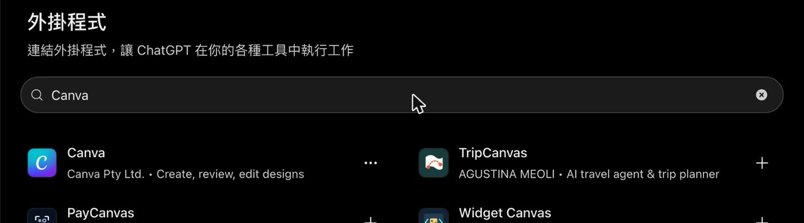
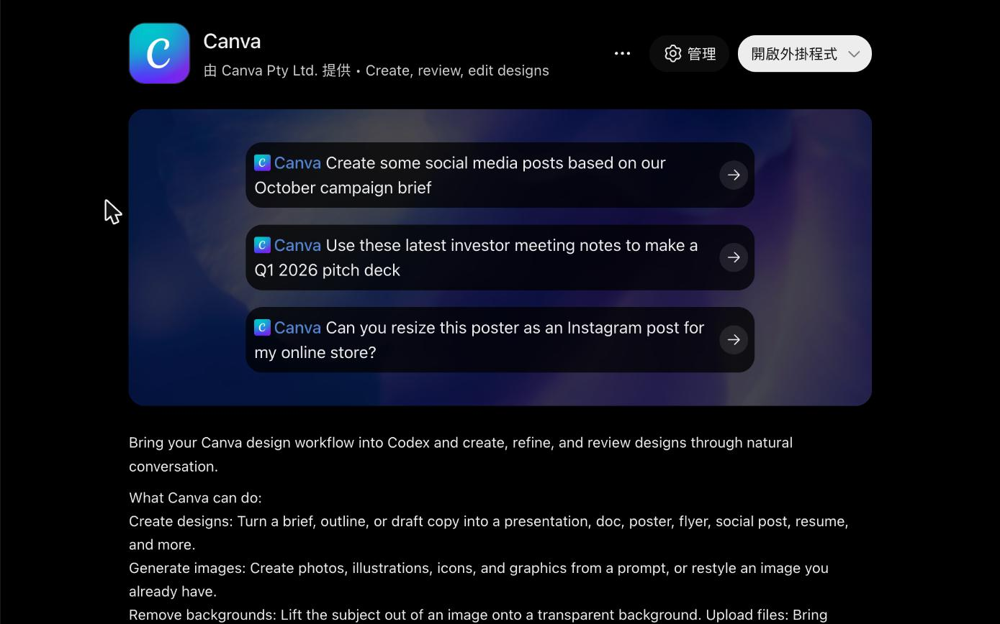
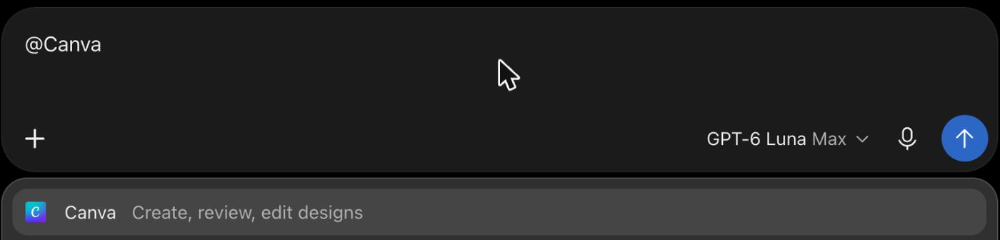
實際跑一次：@Canva 做出 8 頁可編輯簡報（2026 年 11 月）
講師帳號實測，從打字到在 Canva 開啟共約 2 分鐘。簡報主題「低血糖怎麼辦：15-15 法則」。
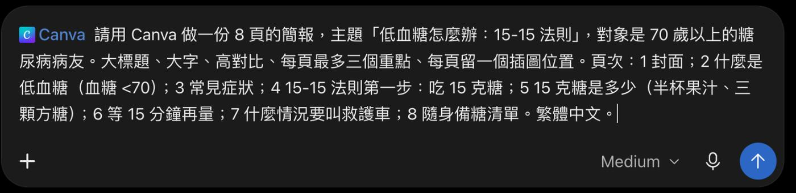
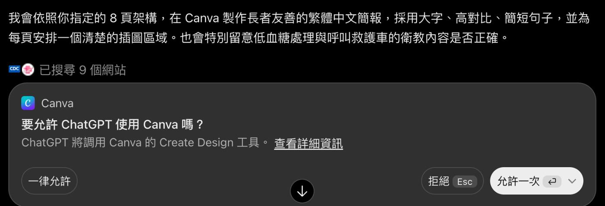
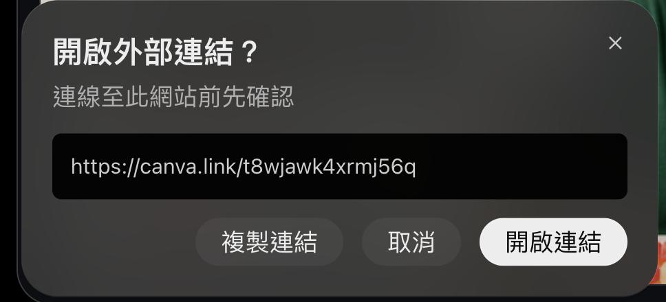
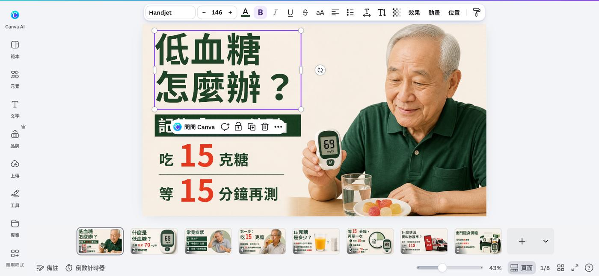
進階：丟一張圖，請 AI「照這個風格」畫
做系列衛教圖卡最好用的方法。三個工具都看得懂上傳的圖，但能「照風格生圖」的是 Gemini 和 ChatGPT。
| 工具 | 能不能參照上傳的圖 | 適合 |
|---|---|---|
| Gemini | 可以，最強；Pro 版一次可放多張參考圖（官方以外資料稱最多 14 張） | 風格轉換、人物一致、多張合成 |
| ChatGPT | 可以，可上傳多張 | 照風格生成，再用「編輯」局部修改 |
| Claude | 看得懂、不能生圖 | 拆解風格、寫成提示詞 |
- 先拆風格、不畫圖：上傳參考圖，請 AI 把色彩、線條、人物畫法、構圖寫成一段「風格說明」
- 存成風格卡：把風格說明存起來，以後每次貼上
- 生圖時講清楚角色：「第 1 張只管風格，不要照抄人物和內容」，不寫的話 AI 常把參考圖整個抄過來
- 系列在同一個對話做：第一張滿意後說「接下來都用這個風格」
- 長期使用放進專案：參考圖＋風格說明放進 ChatGPT 專案或 Gemini 的 Gem（第 14 節）
文字越少越好
中文字常出錯。讓 AI 只畫圖，字到 Canva 或簡報自己加。
不用寫「8K、大師級」
這類詞沒效果，把字數花在描述畫面內容。
改圖要說「什麼不變」
沒鎖住的地方，AI 可能順手改掉人物或文字。
範例圖與提示詞資料庫
| 資料庫 | 內容 | 適合 |
|---|---|---|
| YouMind awesome-nano-banana-pro-prompts | 社群整理上萬則提示詞，附預覽圖，有網頁版可搜尋 | 找特定風格、資訊圖表 |
| PicoTrex Awesome-Nano-Banana-images | 「輸入圖 → 輸出圖」對照加上提示詞 | 學「丟圖改風格」的寫法 |
| ZeroLu awesome-nanobanana-pro | Pro 版進階提示詞範例 | 多張參考圖、進階用法 |
以英文和簡體中文為主。提示詞可以複製，再請 AI 改成衛教主題；圖片是社群蒐集，不一定能商用，只參考寫法，不要直接拿圖來用。
寫作區塊：在 AI 的稿子上直接動手改
不用再說「太抽象了，再改一次」。直接刪、直接補、打個問號，AI 會幫你圓回去。
ChatGPT寫作區塊
- 提示詞最後加「用寫作區塊」，回答裡會出現標著「寫作」的方框
- 點方框右上角「展開」，右側變成文件，可直接打字、刪除，也能復原、下載
- 改完在左邊說「依照我的修改，把整篇順過一次」，新增的字會用粗體標出
- 2026 年 5 月起，主力模型已用寫作區塊取代舊的 Canvas
GeminiCanvas
- 對話框「＋」→「更多工具」→「Canvas」，或直接說「用 Canvas 寫」
- 可直接編輯；反白一段文字，旁邊會跳出「問問 Gemini」，輸入「改白話一點」
- 右上「匯出」可存成 .md 或存到雲端硬碟，最適合要交出去的稿子
ClaudeArtifacts
- 說「做成文件（Artifact）」，內容會出現在右側獨立視窗；部分帳號會改用「Claude Docs」文件，看得到 Claude 邊寫邊打字
- 指定「只改『為什麼能看三個月』那段，其他不要動」，它只會更新那一段
- 可下載、複製或分享；長文寫作是 Claude 的強項
練習：衛教單張的「半自動」改稿
接著直接在稿子上：刪掉你覺得多餘的句子；在想補的地方打「：（這裡補充多久驗一次）」；最後請它「依照我的修改，把整篇順過一次，改過的地方標出來」。
實際操作畫面
以下是講師帳號實際跑上面這個練習的截圖（2026 年 11 月），點圖可放大。各家介面改版快，按鈕位置可能略有不同。
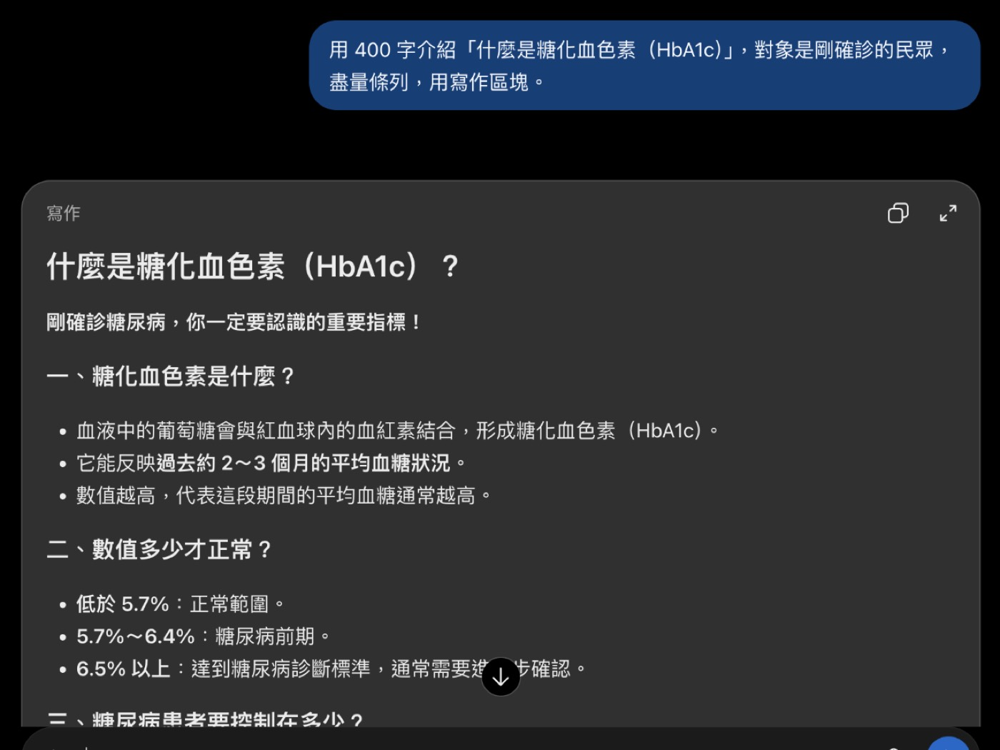
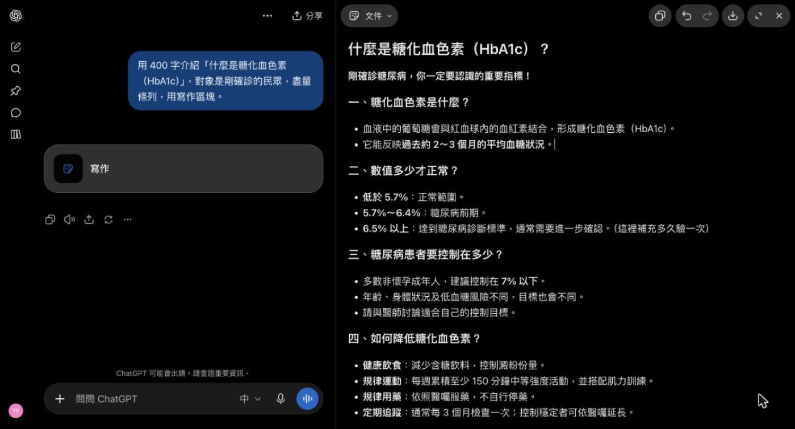
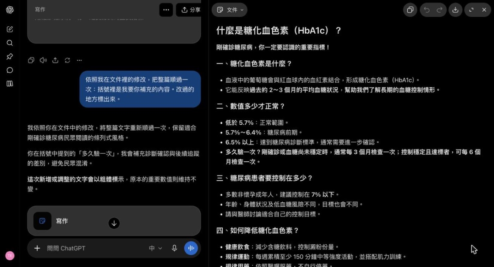
學習模式：讓 AI 當你的家教，不是給答案的機器
先確認你懂到哪裡，再用蘇格拉底式提問一步步帶你想。這是最被低估的功能。
ChatGPT學習模式
對話框打「/」→ 選「學習」，訊息前面會出現「學習」標籤；叫不出來就直接說「我想進入學習模式」。
Claude學習風格
部分帳號在「＋」裡有「樣式 → 學習」；沒有這個選項時，貼下方「家教」提示詞，效果一樣，它還會用勾選卡片先測你的程度。
Gemini引導式學習
對話框「＋」→「更多工具」→「引導式學習」，輸入框會出現「學習」標籤。免費版即可用，會穿插圖解與小測驗。
實際操作畫面：同一個統計問題問三家
講師帳號實際問「兩季達標率差異有沒有意義，我只會算百分比」（2026 年 11 月）。點圖可放大。
衛教師的三個學習題目
看懂統計
「我想學會比較兩季的達標率差異是不是有意義，我只會算百分比。」
追新指引
「帶我讀懂最新 ADA 照護標準中，長者血糖目標的改變。」（請它附出處）
醫學英文
「我下個月要在研討會用英文報告海報，陪我練 3 分鐘口說。」
學到一半想岔題問別的也沒關係，它通常會在回答後把你帶回原本的進度。
排程自動化：交代一次，它每天自己做
前面所有功能都是「你開口它才動」。排程讓 AI 第一次主動為你工作。
ChatGPT排程任務
- 左側「已排程」→ 在「排定工作」框描述任務
- 設定頻率、時間，在雲端自動執行
- 免費版可設少量任務
Claude排程任務
- 左側「排程任務」→「新增任務」：選「使用 Claude 建立」或「手動設定」
- 桌面版 Cowork 也能用「/schedule」
- 需付費方案（Pro 以上）
Gemini排定動作
- 直接在對話裡說「每週一早上 8 點幫我…」
- 左側時鐘圖示「已排定」：新增、管理、暫停
- 需 Google AI 付費方案
實際操作畫面（2026 年 11 月）
講師帳號的排程頁面，點圖可放大。截圖時沒有真的建立任務，個人任務清單已裁掉。
關鍵技巧：排程的提示詞也要用 AMA
只寫一句「每天整理英文單字」，晚上收到的東西多半不是你要的。先加上「在你建立任務前，盡量問我問題」，問太多就回「你建議就好」。
外掛連接：讓 AI 從「出主意」變成「動手做」
連上信箱、行事曆、雲端硬碟，一句話就幫你查、排、整理。
ChatGPT外掛程式
- 左側「外掛程式」→ 搜尋 → 點進去按「安裝外掛程式」→ 確認授權
- Google 系列、Canva、GitHub、Notion 等
Claude連接器
- 「設定」→「自訂」→「連接器」→「探索」，或對話框「＋」→ 連接器
- Gmail、Google 日曆、雲端硬碟、Canva、Notion 等
- 免費版也能用部分連接器
Gemini應用程式（原生最強）
- Google 帳號內建：Gmail、日曆、雲端硬碟、Keep、YouTube、地圖
- ⚙️ 設定 →「個人化智慧服務」→「連結的應用程式」開啟
- 對話中打「@Gmail」「@Google 雲端硬碟」指定
OpenCode雙手是內建的
- 不用安裝外掛：讀寫資料夾裡的檔案、執行指令、上網查資料都是基本能力
- 可再接 MCP 工具（和 Claude 的連接器是同一套標準）
- 差別：對話工具連的是「雲端服務」，OpenCode 動的是「你電腦裡的檔案」
實際操作畫面（2026 年 11 月）
講師帳號的外掛頁面，點圖可放大。截圖時沒有安裝或更改任何設定，帳號 Email 已裁掉。
衛教師的外掛建議清單（ChatGPT：左側「外掛程式」→ 搜尋）
日常行政（建議裝）
- Google Calendar：研習、回診提醒、會議
- Gmail：個人信箱的研習公告、學會通知整理
- Google Drive：讀取你自己放的已公開衛教單張、指標定義
- Canva：第 8 節的圖卡直接送進 Canva 排版
醫學研究（第 13-R 節會用）
- Life Sciences Literature（OpenAI 官方）：找生醫論文、預印本
- Arca FDA, Trials & PubMed：FDA、臨床試驗與 PubMed 公開資料
- 搜尋「pubmed」就看得到；Paperguide、CoChat 類似，擇一即可
不建議／暫緩
- Google Contacts：通訊錄是個資，沒有必要不要連
- Browser（雲端瀏覽器）：會代你操作網頁，等第 5 堂談 Agent 界線再開
- Plugin Creator／Template Creator：進階，之後再說
衛教師的兩個情境
不用說「請用 Google 日曆外掛」，它會自己判斷要用哪一個。
名詞解釋：API 和 MCP 是什麼？外掛背後就是它們
學員常問「外掛、連接器、應用程式、MCP、API」到底是不是同一件事。一句話：API 是兩個軟體之間的「插座規格」，MCP 是專門給 AI 用的「萬用轉接頭」。你在第 12 節點的那些外掛，底下跑的多半就是 MCP。
API（應用程式介面）
- 一個軟體開放給別的軟體「照規格來叫我做事」的入口。你按網頁按鈕是人用介面；程式之間就用 API。
- 衛教師會碰到的兩種：① 模型 API：OpenCode 的「金鑰（API key）」就是這個，付費計次（A 節）。② 服務 API：Google 日曆、PubMed、Canva 都有，程式才看得懂。
- 金鑰等於密碼：不要貼進聊天視窗、不要寫在共用文件；外洩就去原網站撤銷重發。
MCP（Model Context Protocol，模型內容協定）
- 2024 年底由 Anthropic 提出、2025 年起 OpenAI 與 Google 也採用的共同規格：工具商只要做一個「MCP 伺服器」，ChatGPT、Claude、Gemini、OpenCode 都能接。
- 每個 MCP 伺服器提供幾個「工具」（例如「搜尋 PubMed」「讀取雲端硬碟檔案」），AI 看到你的要求，自己決定要不要呼叫。
- 三家叫法不同、本質一樣：ChatGPT 的外掛程式、Claude 的連接器、Gemini 的應用程式，以及 OpenCode 設定檔裡的
mcp區段。 - 和技能的差別：技能是「教 AI 怎麼做」（文字 SOP），MCP 是「給 AI 一雙手」（真的能去抓資料、建檔案）。
| 推薦 MCP／連接器 | 它給 AI 什麼手 | 衛教師怎麼用 | 在哪裡接 | 注意 |
|---|---|---|---|---|
| Google 雲端硬碟＋Gmail＋日曆 | 讀檔、找信、看行程 | 「找出上季所有衛教單張的最新版」「把下週門診衛教排進日曆」 | 三家內建：ChatGPT 外掛程式／Claude 連接器／Gemini 原生 | 只開唯讀；醫院信箱依資安規定 |
| Canva | 建簡報、海報、改尺寸 | 第 8 節實測：一句話生 8 頁可編輯簡報 | ChatGPT 外掛程式、Claude 連接器 | 內容會上 Canva 雲端，只放可公開素材 |
| PubMed／文獻類（ChatGPT：Life Sciences Literature、Arca PubMed；Claude 探索：PubMed） | 搜文獻、抓摘要、給 PMID | R 節的 PICO 查證；每筆附 PMID 可點開驗證 | ChatGPT 外掛程式、Claude 連接器 → 探索 | 仍要自己點開 PMID 確認 |
| Zotero | 讀你的書目庫、加註解 | 「把這 10 篇的研究設計整理成表」 | Claude／OpenCode（社群 MCP） | 要在自己電腦跑 |
| Notion／Google 試算表 | 讀寫資料庫、表格 | 個管追蹤表、衛教排程表讓 AI 直接更新 | 三家都有官方連接器 | 表裡不放可識別個資 |
| Filesystem（檔案系統） | 讀寫指定資料夾 | OpenCode 天生就有；Claude 桌面版可指定資料夾 | OpenCode／Claude Code／Cowork | 只指向練習資料夾 |
| Fetch／瀏覽器（Playwright、Claude in Chrome、ChatGPT 雲端瀏覽器） | 打開網頁、按按鈕、填表 | 「到學會網站查我的繼續教育學分」 | ChatGPT 雲端瀏覽器、Claude in Chrome、OpenCode MCP | 會代你操作網站，第 5 堂再細講 |
| GitHub | 讀寫程式倉庫 | 第 3 堂做 HTML 簡報時讓 AI 直接推上網頁 | ChatGPT 外掛程式、Claude 連接器、OpenCode | 只放公開教材 |
課堂體驗：接一個、用一次（10 分鐘）
- ChatGPT左側「外掛程式」→ 搜尋 Google Drive → ＋ → 用瀏覽器登入並授權（唯讀）。
- 新對話打「@Google Drive 找出檔名含『衛教』的最近 5 個檔案，列出檔名與修改日期」。
- 看它跳出的權限卡，選「允許一次」。
- Claude同一件事：設定 → 自訂 → 連接器 → 探索 → Google 雲端硬碟 → 連接，對話中說「用雲端硬碟連接器找…」。
- Gemini不用裝：直接說「幫我在雲端硬碟找…」，Gemini 原生就接 Google 全家桶。
三條安全線（和外掛、代理一樣）
- 只裝官方或知名來源的 MCP。任何人都能寫 MCP 伺服器，來路不明的等於把資料交給陌生人。ChatGPT 外掛頁有「公開／個人」標籤，Claude 的「探索」是審核過的清單。
- 權限從唯讀開始。允許「讀」之前想清楚它讀得到什麼；允許「寫」之前想清楚它寫壞了誰負責。能選「允許一次」就不要選「一律允許」。
- 資料流向先想清楚。接上雲端硬碟，AI 就看得到那裡所有檔案。院內資料夾、病人名單不要放在授權範圍內；用個人帳號的練習資料夾。
opencode.json 加一段 mcp 設定，或直接對它說「幫我加上 Zotero 的 MCP，設定前先告訴我會改哪個檔」。第 5 堂實作。深度工作：從 80 分作業到 120 分研究報告
讓 AI 花 10～20 分鐘拆解任務、查資料、做出檔案。這是目前三個工具最強的用法。
ChatGPTWork（工作）
- 首頁上方從「對話」切到「工作」；或「＋」→「深度研究」
- 輸入框下方可「選擇專案」、指定「檔案」、串接「外掛程式」
- 直接產出文件、試算表、簡報、網站
Claude研究＋Cowork
- 網頁版：對話框「＋」→「研究」，會搜尋數十個來源並附引用
- 桌面版 Cowork：交代一件長任務，它在你電腦的資料夾裡產出 Excel、Word、PowerPoint 檔
Gemini深入研究
- 「＋」→「更多工具」→「Deep Research」，先給你研究方案，按「修改方案」或「開始研究」
- 完成後按「建立」：轉成網頁、資訊圖表、測驗或語音摘要
- 報告可匯出成 Google 文件
OpenCode代理的主場
- 對話工具的深度模式擅長「查資料寫報告」；OpenCode 擅長「處理你手上的檔案」
- 例：讀 60 筆合成個案的 Excel → 算達標率 → 畫圖 → 存成報表檔，一次交辦
- 它會邊做邊回報每一步，做錯可以叫它改，不用重來
實際操作畫面（2026 年 11 月）
講師帳號的真實畫面，點圖可放大。
Gemini Notebook（原 NotebookLM）現在有代理了嗎？
有，2026 年 6 月的大更新把它從「只回答你上傳的資料」變成會自己找資料、自己做檔案的研究代理；7 月起改名 Gemini Notebook。但目前先開給 Google AI Ultra 和企業版 Workspace，AI Pro 與免費版陸續開放，上課時請實際打開看看自己帳號有沒有。
| 新能力 | 做什麼 | 衛教師怎麼用 |
|---|---|---|
| 專案對話＋自動找來源 | 開一個主題的對話，它用 Google 搜尋幫你推薦、加入來源，含外文原始文獻 | 「建一本足部照護的筆記本」，它先去找指引與期刊，你再挑要不要收 |
| 多步驟研究、步驟可見 | 承接深入研究，對話裡顯示它查了什麼、怎麼推論 | 查核時能回頭看它引用的是哪一頁 |
| 軟體技能、多種匯出 | 照你的指示產出並可再編輯：PowerPoint、Excel、Word、Markdown、CSV、圖表 PNG／SVG | 一句話把筆記本整理成「品質指標季報 Excel＋簡報」 |
實際畫面：Gemini Notebook（2026 年 11 月，AI Pro 帳號）
講師帳號是 AI Pro，代理功能還沒全開，但已經看得到新東西。
祕技：兩段式提示詞
延伸：用 AI 輔助醫學研究與臨床判斷
AI 可以幫你「找、讀、整理、反問」，不能替你「決定」。這一節把界線和做法一次講清楚。
可以交給 AI 的
- 找文獻：用 PubMed 類外掛或研究模式，依 PICO 找近 5 年的指引與系統性回顧
- 讀文獻：上傳 PDF，要它整理研究設計、樣本、主要結果、限制，並標出頁碼
- 整理證據：做成「證據表」：來源、年份、證據等級、結論、與本院對象的差異
- 反問我：用 AMA 反問法，請它列出「這個判斷還缺哪些資訊」
- 寫研究文件：IRB 申請書草稿、研究摘要、海報英文潤稿（去識別化後）
不能交給 AI 的
- 個別病人的診斷與處置決定：AI 只能給「可能要考慮的方向」，決定由醫療團隊依院內流程做
- 藥物劑量：一律回到仿單與院內藥典核對，AI 的數字只當索引
- 沒有出處的「研究顯示」：當作還沒查證；要 DOI 或 PubMed ID，並實際點開確認存在
- 任何可識別的病人資料：研究資料也一樣先去識別化
ChatGPT外掛＋Work
- 裝 Life Sciences Literature 或 Arca PubMed 外掛
- 在問題裡寫「用 PubMed 外掛查，附 PMID」
- 要完整文獻回顧時切到 Work
Claude研究模式＋專案
- 開「研究」會搜尋數十個來源並逐句附引用
- 建一個「研究」專案，放已下載的 PDF 當知識
- 長文摘要與 IRB 文件草稿是強項
Gemini深入研究＋NotebookLM
- 「深入研究」先給計畫，可要求只用學術來源
- 把指引 PDF 丟進 NotebookLM，回答只根據你給的文件並標出處（第 4 堂知識庫的前身）
兩段提示詞
三個常見問題：查得準、找得高、讀 PDF 不幻覺
Q1 醫學、健康資料要怎麼查才精準？
- 先鎖定問題：用 PICO 寫成一句（上面提示詞①）。模糊的問題只會得到模糊的答案。
- 指定來源層級：寫明「只用臨床指引、系統性回顧、統合分析；沒有再退到 RCT」。
- 指定年份與族群：「近 5 年」「成人第 2 型」「亞洲或台灣資料優先」。
- 開對模式：ChatGPT 裝 PubMed 類外掛或用工作模式；Claude 開「研究」；Gemini 開「深入研究」並要求只用學術來源。一般對話模式會憑記憶回答，最容易錯。
- 要可驗證的出處：每一筆要 PMID 或 DOI，你自己點開確認存在、確認結論一致。沒有 PMID 的「研究顯示」當作沒查到。
- 要它說不知道：加一句「找不到就說找不到，不要用其他族群代替而不註明」。
Q2 怎麼找到高等級、高品質的研究？
| 等級 | 類型 | 怎麼請 AI 找 |
|---|---|---|
| 最高 | 臨床指引（ADA、台灣糖尿病學會）、系統性回顧／統合分析（Cochrane） | 「先列指引與 Cochrane 回顧，標出發布年份」 |
| 高 | 隨機對照試驗（RCT） | 「找樣本數 ≥ 200、追蹤 ≥ 12 個月的 RCT」 |
| 中 | 世代、病例對照研究 | 「只在沒有 RCT 時才列，並註明」 |
| 低 | 個案報告、專家意見、新聞、部落格 | 「不要列；若列出要標為低證據」 |
- 請它在每筆後面標 證據等級（可用 GRADE 的高／中／低／極低），並說明理由。
- 專門工具更穩：PubMed 本身、Cochrane Library、Consensus、OpenEvidence（需醫療人員驗證）。通用聊天工具當「幫你讀」，專門工具當「幫你找」。
- 期刊品質看兩件事：有沒有同儕審查、是不是掠奪性期刊（可查 Beall 清單）。請 AI 一起標。
Q3 有 PDF，怎麼讓 AI 解釋時不產生幻覺？
先講實話：沒有任何方法能保證 100%。但下面七步能把錯誤壓到很低，而且讓剩下的錯誤查得出來，這才是重點。
| # | 做法 | 為什麼 |
|---|---|---|
| 1 | 先轉成 Markdown 再給（B 節 MarkItDown），並自己打開看一眼表格有沒有亂掉 | PDF 的多欄排版、表格最常被讀錯；文字版錯誤少、你也看得到它讀到什麼 |
| 2 | 提示詞寫死規則：「只根據附件回答；每一句標出頁碼或段落；附件沒寫的就回答『文件未提及』」 | 關掉它「用常識補」的習慣，這是幻覺最大來源 |
| 3 | 分段問：一次問一個章節、一張表，不要「幫我整本摘要」 | 越長越容易漏；分段也方便你逐段核對 |
| 4 | 數字與建議句要它引用原文：「列出原文那一句，再給你的解釋」 | 原句和解釋並排，錯了一眼看得出來 |
| 5 | 用只看來源的工具：Gemini Notebook（回答附來源編號）、Claude 專案、ChatGPT 專案＋檔案 | 這些模式預設以附件為準，比一般對話穩 |
| 6 | 交叉驗證：同一段請兩家各做一次，比對差異；或請同一家「再讀一次，找出剛才摘要和原文不一致的地方」 | 兩次獨立結果不一致的地方，就是要人工看的地方 |
| 7 | 最後人工抽查：所有數字 100% 核對，文字段落抽 2～3 段；把這套規則做成技能（第 14 節）以後自動套用 | AI 負責讀 90%，你負責最後 10% 和簽名 |
專案：一件長期正事，一個獨立的記憶空間
放進這件事需要的資料，每次對話都會參考；而其他對話不會被它干擾。
ChatGPT專案
- 左側「專案」→ 建立
- 上傳來源檔案、設定專案指示
- 專案有自己獨立的記憶
Claude專案（Projects）
- 左側「專案」→「建立專案」
- 「專案知識」上傳檔案；「設定專案指示」貼固定規則
- 免費版即可建立
GeminiGem／筆記本
- Gem：「Gem 管理工具」→ 新增 Gem，寫指示＋上傳知識檔，像一個專屬小助手。注意：2026/11/17 起 Gem 會自動轉成「技能」，做法相同、名稱改變
- 筆記本：把對話與資料歸在同一個專案資料夾，可與 NotebookLM 同步
OpenCode一個資料夾就是一個專案
- 開一個資料夾「衛教單張改寫室」，裡面放 AGENTS.md（規則）＋已公開單張（知識）
- 在這個資料夾開 OpenCode，就等於進了這個專案
- 產出的檔案直接留在資料夾裡，不用再下載
實際操作畫面：建立「衛教單張改寫室」
講師帳號實際打開建立畫面（2026 年 11 月），截圖時沒有真的建立。點圖可放大。
建議建立的第一個專案：「衛教單張改寫室」
- 建立專案（Gemini 用 Gem；OpenCode 開一個同名資料夾），名稱：衛教單張改寫室
- 上傳：院內已公開的衛教單張、單位用語表（例如統一說「血糖機」而不是「血糖儀」）
- 專案指示貼上第 1 堂的六要素與今天的自訂指示
- 以後每次改寫單張都在這個專案裡開新對話，不必再交代一次背景
專案、技能、外掛、自訂指示：四個東西到底差在哪？
學員最常混淆的四個名詞。一句話：自訂指示是「你是誰」，專案是「一個主題的抽屜」，技能是「一套做法」，外掛是「一雙手」。
| 自訂指示（第 4 節） | 專案（本節） | 技能 | 外掛／連接器（第 12 節） | |
|---|---|---|---|---|
| 存什麼 | 你的身分、對象、口吻、禁忌 | 一個主題的檔案＋專屬指示＋所有對話 | 一件工作的 SOP：步驟、格式、檢查點 | 和外部工具的連線：Gmail、雲端硬碟、Canva、PubMed |
| 什麼時候生效 | 每一次對話，永遠 | 只在這個專案裡的對話 | 需要時才啟動（自動判斷或你用 / @ 叫出） | 你允許它用的時候 |
| 跨不跨專案 | 全域 | 不跨 | 跨：任何對話、任何專案都能用 | 跨 |
| 衛教師例子 | 「我是糖尿病衛教師，對象是 65 歲以上」 | 「衛教單張改寫室」：放模板、院內用語表 | 「長者友善單張」：字級、步驟、禁用詞、輸出格式 | 把單張直接做成 Canva、把文獻從 PubMed 拉進來 |
| 三家名稱 | 給 ChatGPT／Claude／Gemini 的指示 | 專案／專案／Gem 與筆記本 | 技能／技能／技能（Gem 於 11/17 轉為技能） | 外掛程式／連接器／應用程式 |
有沒有「透過專案」差在哪
- 不開專案：每次新對話都要重貼背景、重傳檔案；AI 的記憶靠「記憶」功能零碎記。
- 開專案：檔案與指示常駐，進來就有；同主題的對話集中一處，找得到；專案指示可以比全域指示更細（例如「本專案只產出 A4 單張」）。
- 判斷：同一件事做第 3 次，就該開專案。
有沒有「連接資料夾」差在哪
- 上傳檔案（專案）：AI 讀的是副本，改完要你自己下載、另存。ChatGPT 工作模式下方「檔案」、Claude 專案「新增內容」都是這種。
- 連接資料夾（OpenCode／Claude Code／Cowork）：AI 直接在你的資料夾裡讀、寫、新增檔案；產出留在原地，批次處理 30 個檔也是一句話。代價是它真的會改檔，所以只能指向練習資料夾。
- 連接雲端（外掛）：ChatGPT 外掛接 Google Drive、Claude 連接器接雲端硬碟，AI 可以去抓，但多半是唯讀。
技能（Skill）：怎麼新增、怎麼做一個自己的
ChatGPT新增技能
- 左側「外掛程式」→ 上方切到「技能」分頁
- 右上「新增」→ 三選一：透過對話建立（最簡單，用講的）、使用編輯器建立、從電腦上傳（zip）
- 編輯器：名稱（小寫英文、數字、連字號，最多 64 字）、說明（500 字內，決定它什麼時候會自動啟動）、指示內文
- 建好後出現在「由我建立」，平常自動觸發；也可在對話裡點名「用 ○○ 技能」
Claude新增技能
- 「設定」→ 左側「自訂」區的 Skills → 右上「新增」：上傳 Skill（zip，含 SKILL.md）、建立 Skill（編輯器）、使用 Claude 建立（用講的）
- 「探索」分頁有 Anthropic 與合作夥伴做好的技能，可直接加入
- 使用：輸入框打「/」就列出技能，選一個再接你的內容
Gemini新增技能
- 輸入框打「@」→ 清單最下方「技能」區
- 原本的 Gem 於 2026/11/17 自動轉成技能；新技能從 Gem 管理員建立
- 使用：對話裡打「@技能名稱」再接內容
自己做一個：SKILL.md 長這樣
三家的技能檔格式一樣：一個資料夾，裡面一個 SKILL.md（寫法同第 4 節的 AGENTS.md），需要時再加範本檔。
最省力的做法：請 AI 幫你寫技能
- 寫好的 SKILL.md 存成資料夾 → 壓縮 → ChatGPT「從電腦上傳」、Claude「技能 → 上傳」。
- 同一個檔三家都能用，所以寫一次，到處用。
- 技能裡不要放病人資料與院內未公開文件；那些放專案。
實際畫面：ChatGPT 技能頁（2026 年 11 月）
講師帳號實際畫面，已建好三個技能。
上傳前先瘦身：用 MarkItDown 把 PDF 轉成文字
同一份指引，轉成文字再給 AI，額度用得少、回答更專心，上傳前還能先看一遍有沒有個資。
為什麼要先轉？
- 一頁算兩份：直接上傳 PDF 時，Claude 會把每一頁轉成圖片看一次、再抽文字讀一次，兩份都算額度。官方估算光文字每頁就約 1,500～3,000 token，圖片另計。
- 差距很大：一份 3 頁的文字型 PDF，連圖讀約 7,000 token，只讀文字約 1,000 token，省下七成以上。30 頁的指引直接上傳，可能一次吃掉近 10 萬 token。
- 額度用完要等：上傳的附件越大，越快碰到用量上限，只能等重置。
- 醫療場域多一個好處：轉成純文字後，你能先打開看一遍、搜尋姓名與病歷號，或貼進去識別化工作台檢查，再交給 AI。
MarkItDown 是什麼
微軟推出的免費開源小工具，把 PDF、Word、PowerPoint、Excel 轉成 Markdown 純文字。標題、條列、表格會保留成 AI 好讀的格式。
- 在自己的電腦上轉檔，檔案不會先傳到雲端
- PowerPoint 特別值得轉：Claude 的上傳清單不收 .pptx
- OpenCode 可以直接幫你裝、幫你整個資料夾一起轉
常見疑問：「聽說現在上傳 PDF 跟 Markdown 已經沒差了？」
| 說法 | 對不對 | 實際狀況 |
|---|---|---|
| 「不要上傳 PDF，要給 Markdown」 | 一半對 | 問一次就丟的小文件（10 頁內、純文字），直接上傳 PDF 沒問題，三家都讀得懂。要反覆用（放進專案、給代理、每週重讀）的文件才值得先轉。 |
| 「已經沒差異了」 | 讀得懂沒差，花費有差 | 模型抽文字的能力確實進步了。差異剩在 token：PDF 會多算一份圖片、版面表格常被打散；Markdown 只算文字，標題和表格保留。同一份 30 頁指引，差 3～7 倍額度。 |
| 「差異在 token」 | 對，還有兩個 | ① token：上面那張表。② 檢查個資：純文字你能先搜尋姓名、病歷號再上傳，PDF 很難。③ 代理工具：OpenCode 等資料夾代理本來就只讀文字檔，PDF 要先轉才碰得到。 |
一句話：聊天視窗偶爾問，PDF 直接丟；要省額度、要查個資、要給代理，先轉 Markdown。
哪些檔案該轉？
| 檔案 | 建議 | 衛教師常見例子 |
|---|---|---|
| 文字為主的 PDF | 轉 | 臨床照護指引、會議記錄、評鑑條文、公文 |
| PowerPoint | 轉 | 院內教育訓練簡報、別人分享的衛教簡報 |
| Word、Excel | 都可以 | 品質指標模板直接上傳也行 |
| 圖表很多的 PDF | 別轉 | 食物份量圖、衛教圖卡、流程圖：轉了圖就不見 |
| 掃描的 PDF | 別轉 | 紙本掃描的轉診單、舊版單張：預設不辨識圖片裡的字，會轉出空白 |
| 超過 100 頁 | 差不多 | 此時 AI 本來就只抽文字，轉不轉差異小 |
三種做法，挑一種
最推薦。第 1 堂裝好的 OpenCode，或 Claude 桌面版的 Code 分頁，都能自己裝工具、自己轉檔。網頁版 Claude Code 跑在雲端，裝不到你的電腦上，要用桌面版。
- 在練習資料夾開 OpenCode（或 Claude 桌面版 → Code 分頁，選這個資料夾）
- 貼上下面第一段，讓它安裝並測試
- 以後把 PDF 放進資料夾，貼第二段就好
- 安裝 uv（Python 工具管理器）
- 用 uv 安裝 MarkItDown，確認版本
- 切到 PDF 所在資料夾，轉檔
- 把 .md 上傳到 AI，或打開全選複製貼上
uv tool update-shell，關掉終端機重開。少數工具不收 .md，把 -o 後面的副檔名改成 .txt 就好。只用網頁版、免費方案，或院內電腦不能裝軟體時：
- 用瀏覽器或 PDF 閱讀器打開 PDF
- 全選（Ctrl／⌘＋A）→ 複製 → 貼進對話框
- 表格可能跑掉，貼完請 AI「先把表格整理回來，給我確認」
效果一樣是「只算文字」，缺點是格式較亂、一次只能一份。
Claude最需要轉
- PDF 會「圖＋文」雙重計算
- 同一份文件要反覆問，放進「專案」，重複內容會被快取，更省額度
ChatGPT看情況
- 多數方案上傳 PDF 以讀文字為主，沒有雙重計算
- 反過來說它常看不到圖表，重要的圖另外截圖上傳
Gemini看情況
- 長文件能力強，一般大小的 PDF 直接上傳即可
- 要丟進 NotebookLM 的大量指引，轉成文字更好整理與搜尋
OpenCode轉檔工廠
- 一次轉整個資料夾、順便查個資字串
- 轉好的 .md 直接當專案知識或 AGENTS.md 參考資料
四工具對照表：同一招，在哪裡按？
印這一頁就夠了。名稱若改版，記住「功能」比記住按鈕重要。
| 步驟 | ChatGPT | Claude | Gemini | OpenCode |
|---|---|---|---|---|
| 讓 AI 懂你 | 個人化 → 自訂指示／記憶（快速回答關閉） | 設定 → 帳戶 → 給 Claude 的指示；記憶 | 個人化智慧服務 → 給 Gemini 的指令 | 資料夾裡的 AGENTS.md |
| 想久一點 | 推理強度 | 延伸思考 | 思考型／Pro 模型 | 換成較強的模型 |
| 不留記錄 | 暫時對話 | 無痕聊天 | 臨時對話 | 開新 session；資料留在本機 |
| 製圖 | 建立圖像＋編輯圈選 | Artifacts 圖卡（HTML／SVG）、Canva 連接器 | 建立圖像（Nano Banana） | 用程式畫數據圖表，存成 PNG |
| 寫作區塊 | 寫作區塊（舊稱 Canvas） | Artifacts／Claude Docs | Canvas（匯出 .md 或雲端硬碟） | 直接改資料夾裡的檔案 |
| 學習模式 | 學習模式（@study） | 學習樣式 | 引導式學習 | —（用對話工具） |
| 排程 | 排程任務 | Cowork 排程（付費） | 排定動作（付費） | —（第 5 堂再談） |
| 外掛 | 外掛程式 | 連接器 | 應用程式（Google 全家桶） | 內建讀寫檔案、執行；可接 MCP |
| 深度工作 | Work | 研究、Cowork | 深入研究 | 主場：交辦整件事 |
| 專案 | 專案 | 專案 | Gem、筆記本 | 一個資料夾 |
| 大份 PDF | 讀文字為主，圖表另截圖 | 先用 MarkItDown 轉 .md 再上傳 | 直接上傳；大量指引轉文字進 NotebookLM | 叫它整個資料夾轉檔 |
ChatGPT什麼時候用
中文語音對話最自然；生圖後局部修改最順手；要一口氣做出整份檔案時用 Work。
Claude什麼時候用
長文寫作、改稿語氣、分析 Excel 與報表、做互動小工具（第 5 堂）。
Gemini什麼時候用
已在用 Google 帳號、Chrome、雲端硬碟；衛教圖卡初稿；深入研究後一鍵轉成資訊圖表。
OpenCode什麼時候用
一次要處理很多檔案、要產出檔案、同一套流程每季都要跑一次。前提永遠是：資料夾裡只有去識別化的資料。
課堂實作：個案照護數據整理、品質指標與報表自動化
把前面學的招式用在課綱要求的五件事上。一份合成資料的 Excel 模板，從檢查到回饋單一路走完。
60 位虛構個案、4 季資料，只有代號。五個工作表：使用說明、指標報表、資料檢查、個案回饋單、原始資料（＋指標設定）。以後每季貼新資料就能重複套用。
課綱五項，各用哪一招、對到模板哪一頁
| 課綱項目 | 用今天的哪一招 | 模板對應 | 提示詞 |
|---|---|---|---|
| ① 去識別化檢查流程 | 去識別化工作台（整份檔案）；自訂指示第 6 條 | 「原始資料」只有代號欄 | — |
| ② 數據清洗、欄位確認、異常值 | AMA 反問法：先問、不算 | 「資料檢查」工作表會亮燈 | Ⓐ |
| ③ 分組平均、達標率、前後期比較 | 人事時地物＋Why | 「指標報表」選季別自動更新 | Ⓑ |
| ④ 圖表選擇原則與驗算 | 要它說明選圖理由＋列分子分母 | 「指標報表」趨勢圖 | Ⓒ |
| ⑤ 報表模板與個案趨勢回饋單 | 專案／Gem；OpenCode 整件交辦 | 「個案回饋單」選代號印 A4 | Ⓓ |
① 上傳前的去識別化檢查（三步）
- 整份檔案先過工作台：Word、Excel、PDF、照片、截圖都可以直接丟進「去識別化工作台」，自動標出姓名、病歷號、身分證、生日、電話、地址，換成「個案A」「家屬B」，下載乾淨的版本
- 人工再看一遍：自動偵測一定有漏網，簽名、照片要手動遮；代號對照表留在院內電腦
- 確認院內規範：合成資料今天隨便用；真實資料依本院規定，不確定就不要上傳
全部在你的瀏覽器裡處理：不上傳、沒有伺服器、工具本身不用 AI。可自訂稱呼、年齡組距、日期與地址的粗細。第 1 堂的「去識別化小幫手」處理純文字，這一個處理整份檔案。
④ 圖表選擇原則（口訣）
| 想說的事 | 用什麼圖 |
|---|---|
| 幾組比大小 | 長條圖（分組達標率） |
| 隨時間變化 | 折線圖（四季趨勢） |
| 佔比 | 堆疊長條；圓餅圖只在 3 類以內 |
| 前後期差多少 | 並列長條＋標出差異百分點 |
驗算方法：挑一項指標，用 Excel 篩選自己數分子、分母，和 AI 算的比率一致才交出去。
- 開一個新專案「品質指標」，專案指示貼上自訂指示，知識區放「指標設定」表的截圖或文字
- 拖入 Excel 檔，依序貼 Ⓐ→Ⓑ→Ⓒ→Ⓓ
- 它會實際跑計算；要圖時說「做成圖表 Artifact」
- 對話框「＋」上傳 Excel（或從雲端硬碟選）
- 依序貼 Ⓐ→Ⓑ→Ⓒ→Ⓓ，結果可要求「匯出到 Google 試算表」
- 也可以在 Google 試算表裡直接開右側 Gemini 面板提問
- 對話框「＋」上傳 Excel
- 依序貼 Ⓐ→Ⓑ→Ⓒ→Ⓓ，它會用內建分析工具計算
- 要正式報表時改用 Work，指定輸出成簡報
- 把 Excel 放進練習資料夾，在 OpenCode 打開該資料夾
- 把 Ⓐ～Ⓓ 一次貼上，並加一句「每一步做完先回報，等我確認再往下」
- 它會把比較表、圖檔、摘要與回饋單存在資料夾裡；打開檔案核對，再叫它修
Ⓐ 的實際執行畫面（ChatGPT 工作模式，2026 年 11 月）
講師把課程模板（合成資料）上傳給 ChatGPT，貼上 Ⓐ。點圖可放大。
延伸：用 AI 做描述性統計，怎麼確保數字是對的
時間夠再上。接在 Ⓐ 之後：平均、百分比、分組計數看起來最簡單，卻是最常「算錯而沒人發現」的地方。
為什麼會錯：AI 有兩種「算」
- 用看的算（心算）：模型把表格當文字讀，直接「想」出一個平均。小表可能對，列數一多就會漏列、看錯欄、把 7.5 讀成 75。這是幻覺的來源。
- 寫程式算：模型寫一段 Python，由程式真的去加總。數字由程式產生，模型只負責寫程式和解讀。這條路才可靠。
- 三家在哪一條路：ChatGPT 工作模式與「進階資料分析」會跑程式；Claude 開「分析工具」（設定 → 功能）；Gemini 會自動執行程式碼；OpenCode 本來就在跑程式。看到它顯示程式碼或「正在分析」，才代表它真的算了。
Excel 還是 CSV？差別不在格式，在「乾不乾淨」
- Excel 出錯的原因：多個工作表、合併儲存格、標題在第 3 列、備註行夾在資料中、公式與隱藏欄、數字存成文字、單位寫在格子裡（「7.5%」）。AI 讀錯範圍，數字就全錯。
- CSV 為什麼穩：只有一張表、第一列就是欄名、沒有公式、沒有格式。所以「改用 CSV」有效，但真正有效的是「一個檔一張乾淨的表」。
- 乾淨表的規格：第一列欄名（不重複、不含空白與單位）、一列一筆、數字欄只有數字、日期統一 YYYY-MM-DD、缺值留空不要填「無」或「-」、沒有合併儲存格、沒有小計列。
- 非用 Excel 不可時：指定「只讀『資料』工作表，A1 到 H301」，並請它先印出讀到的前 5 列給你看。
十條檢查：每次請 AI 算數字都照做
| # | 要它做的事 | 抓什麼錯 |
|---|---|---|
| 1 | 先描述資料再算：幾列幾欄、每欄名稱與型態、每欄缺值數、數值欄的最小／最大值 | 讀錯範圍、讀錯工作表、7.5 變 75 |
| 2 | 顯示程式碼與程式輸出，每個數字旁附程式印出的原值 | 確認是「算的」不是「想的」 |
| 3 | 每個比例寫明分子與分母，以及分母排除了誰 | 達標率的分母用錯（全部病人 vs 有檢驗者） |
| 4 | 異常值先列出、不要自動排除，排除與否由你決定並記錄 | 它「好心」把 1380 丟掉，你不知道 |
| 5 | 缺值處理方式明說：忽略、補 0、補平均，三者結果差很多 | 平均值被缺值補法改變 |
| 6 | 分組統計時附每組人數 n，n 小於 10 的組標記 | 一組只有 3 個人卻拿來比較 |
| 7 | 先不要四捨五入；最後呈現再統一小數位 | 中途進位造成加總不等於 100% |
| 8 | 只做描述，不要它順便下「顯著」「有效」「因為」的結論 | 描述統計被偷渡成因果推論 |
| 9 | 自己抽查 3 個數字：用 Excel 的 =AVERAGE、=COUNTIF 或樞紐分析算一次比對；或請另一家重算 | 唯一能抓到系統性錯誤的方法 |
| 10 | 結果表每一欄都要能回答「從原始哪一欄、用什麼規則算出來」，請它附一張「欄位對照表」 | 一季後重跑時對不起來 |
實際跑一次提示詞①：ChatGPT 讀課程 Excel 模板（2026 年 11 月）
只要求「描述資料、不要算」。注意它做了什麼、沒做什麼。
兩段提示詞
和 Ⓐ 實測的連結、以及界線
- 第 16 節 Ⓐ 的實測裡，ChatGPT 沒有直接算，而是先反問 10 個分子、分母定義的問題，又抓出 HbA1c 75 與收縮壓 1380 兩個異常值。那就是第 1、3、4 條在運作。它反問是好事，不要嫌煩。
- 推論統計（t 檢定、迴歸、p 值）不在今天範圍：描述統計算錯你看得出來，推論統計算錯你看不出來。要做請回到 SPSS 或找統計諮詢。
- 資料一律先去識別化（第 1 堂的工作台），用合成資料練習；真實院內資料依院內規範與 IRB。
- 任何要進報告、評鑑、論文的數字：AI 算一次、你用 Excel 算一次、數字一致才用。
課堂實作：註冊 GitHub，上傳你的第一個自我介紹網頁
今天在課堂上一起做完：註冊、請 AI 做網頁、上傳、用手機打開。第 3 堂會在同一個網站上深入做 HTML 衛教簡報。
GitHub 是什麼？
全世界工程師放檔案的雲端倉庫。我們只用它其中一個免費功能：GitHub Pages，把 HTML 檔變成一個公開網址。
為什麼要學？
AI 做出來的網頁、簡報、衛教小工具都是 HTML 檔。放上 GitHub Pages，用手機、LINE 分享一個連結就能打開，不用寄檔案。這份講義就是這樣放上網的。
要花錢嗎？
不用。免費帳號就能做公開網頁，不需要信用卡。要準備的只有一個 Email 和 20 分鐘。
步驟一：註冊 GitHub（5 分鐘）
- 打開 github.com/signup
- 輸入 Email、設定密碼
- 設定 Username（使用者名稱）：這會變成你的網址，例如 username 是
tyh-dm-amy，網址就是tyh-dm-amy.github.io。只能用英文小寫、數字、減號，取好記、專業一點的 - 完成真人驗證，到信箱收 GitHub 寄來的驗證碼，貼回網頁
- 選方案時選 Free；問卷可以直接略過
- 建議到右上頭像 →「Settings」→「Password and authentication」開啟兩步驟驗證
步驟二：請 AI 做一個自我介紹網頁（5 分鐘）
三個對話工具都可以。Claude 會直接在右側顯示做好的網頁，最方便預覽；ChatGPT 和 Gemini 會給一段程式碼，也一樣能用。
Claude存檔
右側網頁上方按「下載」，或點「程式碼」分頁全選複製。檔名改成 index.html。
ChatGPT存檔
程式碼方框右上「複製」，貼到記事本，存成 index.html。也可以請它「直接給我下載檔案」。
Gemini存檔
用 Canvas 做可以直接預覽網頁；從程式碼複製貼到記事本，存成 index.html。
步驟三：上傳到 GitHub Pages（10 分鐘，全程用網頁，不用寫程式）
- 登入 GitHub，右上「＋」→「New repository」（新增倉庫）
- Repository name 一字不差填
你的username.github.io，例如tyh-dm-amy.github.io。這個特別的名字會讓 GitHub 自動把它變成網站 - 「Choose visibility」選 Public；「Add README」保持 Off → 按綠色「Create repository」
- 出現的頁面中間找到藍色小字「uploading an existing file」，點進去
- 把
index.html拖進「Drag files here」框框 → 下方保持「Commit directly to the main branch」→ 按綠色「Commit changes」 - 等 1～2 分鐘，打開
https://你的username.github.io，看到你的網頁就完成了 - 沒出現？到倉庫上方「Settings」→ 左側「Pages」，確認 Source 是「Deploy from a branch」、Branch 是「main」→「/ (root)」，按 Save 再等 1 分鐘
之後要改內容
回到 AI 說「把擅長主題加上『飲食衛教』」，存成新的 index.html，再照第 4、5 步上傳覆蓋即可。也可以在 GitHub 上點檔案 → 鉛筆圖示直接改字。
第 3 堂深入：HTML 衛教簡報
今天學會的上傳流程，第 3 堂直接沿用。HTML 簡報一樣上傳到這個倉庫，例如存成 slides.html，網址就是 你的username.github.io/slides.html，一個連結就能在團體衛教現場用手機或電腦打開。
實際操作畫面（講師帳號，2026 年 11 月）
示範時沒有真的建立倉庫或上傳檔案，點圖可放大。你的畫面上 mattsue1003 會換成你自己的 username。
OpenCode進階：讓代理幫你做網頁
在練習資料夾開 OpenCode，貼上上面的個人網頁提示詞，它會直接在資料夾裡建好 index.html，還能開瀏覽器給你看。上傳仍然用上面的網頁拖曳方式；讓代理直接推上 GitHub 需要額外設定登入，第 5 堂再教。
課後任務
勾選會自動記在這台電腦的瀏覽器裡，下次打開還在。
今天的製圖局部修改與寫作區塊，下週會直接用在衛教圖卡與短影音腳本上；做好的 HTML 簡報會上傳到你今天建好的 GitHub 網頁。